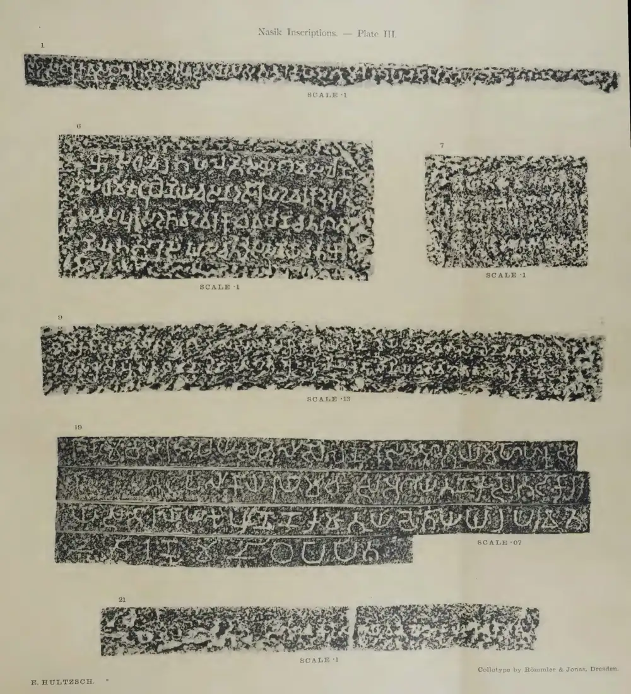
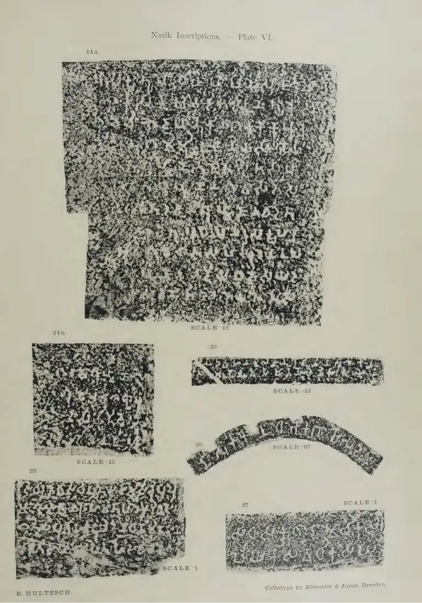
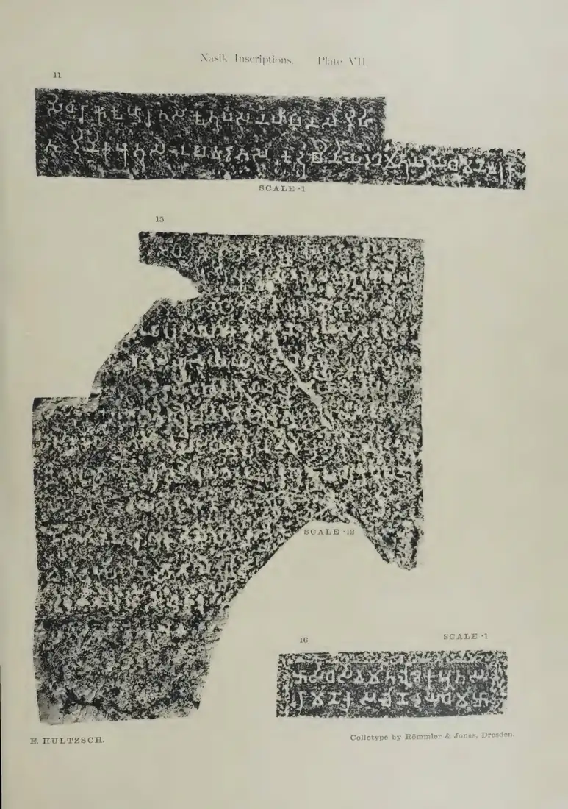
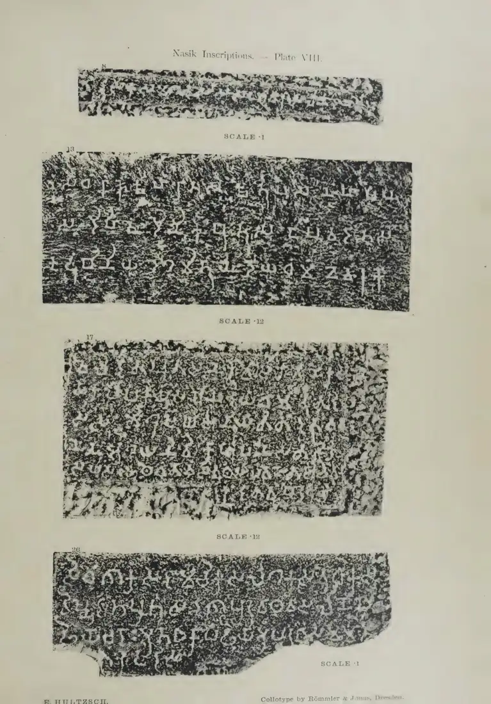

The inscriptions in the caves at Nâsik
THE INSCRIPTIONS IN THE CAVES AT NASIK.
By E. SENART ; PARIS.
For a description of the caves at Násik, as well as for those at Kárlé,2 it will be enough to refer to Burgess and Fergusson's Rock-cut Temples and to the Reports of the Archaeological Survey of Western India, Vol. IV. p. 37 ff. As for the inscriptions which these caves contain, the first publication of them goes back to Vol. VII. p. 37 ff. of the Journal, Bombay Branch, Royal Asiatic Society, and the first interpretation to Bhandarkar's Notices. published in the Transactions of the London Congress, 1874, p. 306 ff. To Bhagwanlal Indraji we are indebted for the reproductions on which are based Bühler's translations, printed in the Archaeological Survey of Western India (AS.), and for the commentary written by Bhagwanlal himself and embodied in the volume devoted to Násik in the Bombay Gazetteer, Vol. XVI. p. 544 ff. (G.). These two translations, being based on thoroughly reliable documents, are the real tests of our present knowledge on the subject, and I shall constantly refer to them in this article. As in the case of Kárlé, the epigraphs of Násik have been distributed by AS. into two different series, viz. " Kshatrapa and Andhra inscriptions " (Ksh.) and " Násik inscriptions of private individuals " (Pr.). The numbering adopted here is that which was used by Bhagwanlal in the Gazetteer.
No. 1, Plate iii. (Ksh. 16).
On the back wall of the veranda of Cave No. 2.
TEXT.
Sidha (1) raño Vásiṭhiputasa (2) Siri-Pulumayisa samvachhare (3) chhathe 6 gimhapakhe (4) pachame 5 divase (5) . . . . .
REMARKS.
(1) AS. sidham. — (2) G. and AS. Vásaṭhi°; but on the estampages the beginning of the i-curl is sufficiently discernible. — (3) G. and AS. sava°. — (4) AS. gīmu°, doubtless a simple typographical mistake. — (5) AS. divase 1. po. hi. ti. á. I can make nothing of the indistinct traces of letters which follow divase.
TRANSLATION.
“ Success ! On the . . . . . day of the fifth — 5th — fortnight of summer in the sixth — 6th — year of king Siri-Pulumayi, son of Vásiṭhi . . . . . ”
1 The ildu of line 12 of this record is equivalent to the odan=ildu, 'being together, being in the company of each other, being convened,' of various other records; see a remark in Vol. VI. above, p. 68, note 6.
2 See above, Vol. VII. p. 47 f.
No. 2, Plate i. (Ksh. 18).
On the back wall of the veranda in Cave No. 3, above the entrance.
TEXT.
1 Siddham (1) raño Vāsiṭhiputasa (2) Siri-Pulūmāyisa savichhare (3) ekunavise 19 gimhāṇa (4) pakhe bitiye 2 divase terase 13 rājaraño Gotamīputasa Himavata-Meru-
2 Madara-pavatasamasārasa Asika-Asaka(5)-Mulāka-Suraṭha-Kukur-Āparamta(6)-Anupa-Vidabha-Ākarāvati-rājasa Vijha-Chhavata-Pārichāta(7)-Sahya-Kaṇhagiri-Macha-Siriṭana-Malaya-Mahida-
3 Seṭagiri-Chakora-pavatapatisa savarājaloka(8)madala(9)patigahītasāsanasa divasakarakara(10)vibodhitakamalavimalasadisavadanasa tisamudatoyapītavāhanasa paṭipuṇachadamadalasasirīka-
4 piyadasanasa varavāraṇavikamachāruvikamasa bhujagapatibhogapīnavāta(11)-vipuladighasuda . bhujasa (12) abhayodakadānakilinanibhayakarasa avipanamātu-susūsākasa (13) suvibhatativagadesakālasa
5 porajananivisesasamasukhadukhasa khatiyadapamānamadanasa (14) Saka-Yavana-Palhava-nisūdanasa dhampajitakaraviniyogakarasa kitāparādhe pi satujane apāṇahisāruchisa dijāvarakuṭubavivadha-
6 nasa Khakharātavasa(15)niravasesakarasa Sātavāhanakulayasapatithāpana(16)karasa savamadalā(17)bhivāditacha . nasa vinivatitachātuvaṇasakarasa anekasamarāvaji-tasatasusghasa aparājitavijayapatākasatujanaadupadhasaniya(18)-
7 puravarasa kulapurisaparaparāgatavipularājasadasa āgamāna (19) nilayasa sapurisānam inasayasa Sirīy . adhiṭhānasa upachārāna (20) pabhavasa ekakusasa ekadhanu-dharasa ekasūrasa (21) ekabamhaṇasa Rāma-
8 Kesav-Ājuna-Bhīmasena-tulaparakamasa (22) chhaṇaghanusava(23)samājakārakasa Nābhāga(24)-Nahusa-Janamejaya-Sakara-Yayāti-Rām-Ābarisa-samatejasa aparimitam akhayam achitam abhuta (25) Pavana-Garulā(26)-Sidha-Yakha-Rākhasa-Vijādhara-Bhūta-Gadhava-Chāraṇa-
9 Chada-Divākara-Nakhata-Gaha-vichiṇasamarasirasi jitaripusaghasa nāga(27)varakhadhā gaganatalam abhivigādhasa kulavipulasirikarasa Siri-Sātakaṇisa mātuya mahādeviya (28) Gotamiya Balasiriya sachavachanadānakhamā(29)hisā(30)-niratāya tapadamaniya-
10 mopavāsataparāya rājarisivadhusadam (31) akhīlam anuvidhīyamānāya kāruda deyadhama . . . . . (32) sikharasadise Tiraṇhupavatasikhare vim . (33)varanivisesamahidhīka leṇa eta cha leṇa mahādevī mahārājamātā mahārājap . tāmahī (34) dadāti nikāyasa Bhadāvaniyānam (35) bhikhusaghasa (36)
11 etasa cha leṇasa chitaṇanimita (37) mahādeviya ayakāya sevakāmo (38) piyakāmo cha ṇat . . . . . (39)pathesaro (40) pitupatiyo dhamasetusa dadāti gāma (41) Tiraṇhupavatasa aparadakhiṇapase Pisājipadakam (42): savajātabhoganiraṭhi.
REMARKS.
(1) G. siddha ra°.— (2) G. and AS. sīṭhipu°.— (3) G. savachhare; AS. saṅvachhare; i seems clear, and it must be remembered that saviṅchhala = saṅvatsara is found in the Sahasrām edict. As to the change of a into i in Prākrit, comp. Pischel's Grammatik der Prākrit-Sprachen, paragraphs 101-3.— (4) G. and AS. gimhāṇa.— (5) G. Asika-Susaka°.— (6) G. °parāta°; ta is followed not only by such a blank as is frequent in this inscription, but by some traces which look like the rest of a letter. As, however, it cannot be a k, it is not easy to
imagine what it could have been, and it is most probable, as has been admitted by the former editors, that these traces are nothing but accidental deteriorations of the stone. — (7) AS. °Pariváta°. — (8) The character lo is all but clear. — (9) AS. °mainđala°. — (10) The ka of the second kara, which falls into the flaw, is very indistinct. — (11) G. and AS. °pinavata°. — (12) The ra restored by G. and AS. cannot be doubted, though injured by the flaw. — (13) G. °sususá°. — (14) The top of the na of dana seems to bear a horizontal stroke, and I am inclined to think that madaṇasa was intended. — (15) AS. °vainsa°. — (16) AS. °patithápa°; th is at least more probable, besides being more correct. — (17) AS. °mainđalá°. — (18) AS. °padhasasaníya° (a mere printer's mistake). — (19) G. °mánain. — (20) G. °chúránain. — (21) AS. omits ekasúrasa in the transcript. — (22) AS. °paráka°. — (23) G. chhanyyannsa°. — (24) AS. Nabhága°. — (25) G. °bhutain. — (26) G. °Garuđa°. — (27) G. ṇaya°; AS. naga°. — (28) AS. °deviya. — (29) á of °khamá° seems to me at least doubtful. — (30) G. °hiinsá°. — (31) AS. °vadhúsadam. — (32) AS. restores [Kelása]pa[rata]°. I feel no doubt at all about this restoration which is confirmed by the still visible e-stroke; but it must be understood that it is entirely conjectural. — (33) G. and AS. restore vímú[na]°, which is certainly right. — (34) G. °patáma°; AS. °p[i]táma°; the beginning of the i-curl of pitá is still visible. — (35) AS. °niyá°; G. and AS. °yána bhi°. — (36) G. °samghasa. — (37) AS. chitaná°. — (38) G. sevákámo. — (39) AS. ṇa[tá] . . . Dakhiná]°. Except the t which has left some traces, the passage in brackets is nothing but a conjecture, although a more than probable one. — (40) AS. °pathisaro. — (41) AS. gímain. — (42) AS. Pisáchi°; the final anusvúra is at least doubtful.
TRANSLATION.
“Success! In the nineteenth — 19th — year of king Siri-Pulumáyi Vāsiṭhiputa, in the second — 2nd — fortnight of summer, on the thirteenth — 13th — day, the great queen Gotami Balasiri, delighting in truth, charity, patience and respect for life; bent on penance, self-control, restraint and abstinence; fully working out the type of a royal Ikishi's wife; the mother of the king of kings, Siri-Sátakaṇi Gotamiputa, who was in strength equal to mount Himavat, mount Meru, mount Mandara; king of Asika, Asaka, Mulaka, Suraṭha, Kukura, Aparanta, Anupa, Vidabha, Ākarávanti; lord of the mountains Vindhya, Chhavata, Pāricháta, Sahya, Kaṇhagiri, Macha, Siriṭana, Malaya, Mahendra, Seṭagiri, Chakora; obeyed by the circle of all kings on earth; whose face was beautiful and pure like the lotus opened by the rays of the sun; whose chargers had drunk the water of three oceans; whose face was lovely and radiant like the orb of the full moon; whose gait was beautiful like the gait of a choice elephant; whose arms were as muscular and rounded, broad and long as the folds of the lord of serpents; whose fearless hand was wet by the water poured out to impart fearlessness; of unchecked obedience toward his mother; who properly devised time and place for the pursuit of the triple object (of human activity); who sympathised fully with the weal and woe of the citizens; who crushed down the pride and conceit of the Kshatriyas; who destroyed the Śakas, Yavanas and Palhavas; who never levied nor employed taxes but in conformity to justice; alien to hurting life even towards an offending enemy; the furtherer of the homesteads of the low as well as of the twice-born; who rooted out the Khakharáta race; who restored the glory of the Sátaváhana family; whose feet were saluted by all provinces; who stopped the contamination of the four vaṇṇas; who conquered multitudes of enemies in many battles; whose victorious banner was unvanquished; whose capital was unassailable to his foes; who had inherited from a long line of ancestors the privilege of kingly music; the abode of traditional lore; the refuge of the virtuous; the asylum of Fortune; the fountain of good manners; the unique controller; the unique archer; the unique hero; the unique Bráhmaṇa; in prowess equal to Ráma, Keśava, Arjuna and Bhímasena; liberal on festive days in unceasing festivities and assemblies; not inferior in lustre to Nábhága, Nahusha, Janamejaya, Sagara, Yayáti, Ráma and Ambarísha; who, vanquishing his enemies in a way as constant as inexhaustible, unthinkable and marvellous
in battles fought by the Wind, Garuđa, the Sildhas, the Yakshas, the Rákshasas, the Vidyádharas, the Bhútas, the Gandharvas, the Cháraṇas, the Moon, the Sun, the Asterisms and the Planets, (appeared to be himself) plunging into the sky from the shoulder of his choice elephant; (and) who (thus) raised his family to high fortune, — caused, as a pious gift, on the top of the Tiraṇhu mountain similar to the top of the Kailása, (this) cave to be made quite equal to the divine mansions (there). And that cave the great queen, mother of a Mahárája and grandmother of a Mahárája, gives to the Saṅgha of monks in the person of the fraternity of the Bhadāvaniyas; and for the sake of the embellishment of that cave, with a view to honour and please the great queen his grandmother, her grandson . . . . lord of [Dakshinā]-patha, making over the merit of the gift to his father, grants to this meritorious donation (viz. the cave) the village Pisājipadaka on the south-west side of mount Tiraṇhu. Renunciation to the enjoyments of every kind.”
For all the proper names which are enumerated in line 2, I must refer the reader to the short geographical index given at the end of the Nâsik chapter in the Bombay Gazetteer, Vol. XVI.1 The names Surâshṭra, Anùpa, Âkarâvanti, Kukura and Aparânta appear again in the Rudradâman inscription at Girnâr.2 The observations to which they have given rise, will be found especially in Arch. Surv. West. India, Antiq. of Káthiáwâr and Kachchh, p. 128 ff., and Ind. Ant. Vol. VII. p. 257 ff. This reference establishes the reading Âkarâvanti, and even in Sanskrit orthography the form Kukura. Of the other names, Asaka may be = Ashaka, or also Aśvaka; but I am not prepared to admit for Asika the connection with the Arsacidæ which was proposed by Bhagwanlal. They are simply the Rîshikas who are well known from the Epic, and for whom I may refer to the Zeitschr. für die Kunde des Morgenlandes, Vol. II. p. 58 f. The verse from the Mahâbhárata (V. 81) which is noted there (Kâmbôjá Rîshikâ yé cha Paśchimânúpakáścha yé) very conveniently brings them into contact with the Anùpa country. Seeing them here immediately associated with the Aśvakas, one is reminded of the legends which were current of their marvellous horses. The Mułakas remain shrouded in obscurity. Bhagwanlal adduced the dynasty of the Muṇdakas, known from the Vishṇupuráṇa; and the way in which they are there mentioned together with the Śakas and Tukháras is such as to commend the hint. But I am doubtful about the change of l into nđ.3 As to the names of mountains, I do not think there can be any hesitation in reading Pâricháta. It must therefore be admitted that the form Pâriyâtra need not necessarily be proscribed as was done by Bühler, who otherwise agreed with Bhagwanlal in the identification of that range. As to Macha (apparently = Mañcha), we have nothing to rely on but the conjecture of Bhagwanlal, too bold I fear to be really convincing. Cases like gahata = grihastha (K. 5) do not permit us to be quite as positive as Bühler regarding the impossibility of Siritana being = Śrîstana. I am less inclined to consider seṭa = śvėta in Seṭagiri. On the other hand, the name can hardly be connected, as Bhagwanlal wanted, with Sâđagera, Sâđakara, which in the Kuđâ inscriptions (1, 9) has no e in the first syllable, and which, as a family or tribal appellation, rather reminds of the name of Sâta(or Sâda)karṇi.
The compound savarája° is slightly irregular; but in the somewhat loose style of Prâkṛit we often meet with forms like savalokarájamađala or savalokamađalarája. The transposition of abhayodakadânakilina (= abhayadânodakakilina), proposed by Bhagwanlal and Bhandarkar (Or. Congr. 1874, p. 313), would give a decidedly better construction and bring out more clearly the antithesis between bhayadâna and nirbhaya; but it has no bearing on the general meaning. The attribute dhamopajita° is meant to imply that the king not only levied taxes in strict accordance with the law, but used them exclusively for just purposes.
1 Compare also Mr. V. Smith's note in the Zeitschr. D. Morg. Ges. Vol. LVI. p. 674 f.
2 See p. 47 above.
3 Mr. V. Smith (loc. cit.) refers doubtfully to the Múlikas and Maulikas of the Eṛhatsamhitd, XIV. 8 and 23.
To all appearance Bhagwanlal is right in supposing that after patáka the proximity of the initial sa in satu has caused the dropping of the genitive termination sa, which is required if the compound aparájitavijayapatáka is taken as an independent epithet of the king. Otherwise it would have to be taken as qualifying puravara, which would be a far-fetched sort of interpretation and against the phraseology of our inscriptions.
Bühler translated kulapurisa° by 'who bore many royal titles descended to him from a (long) line of ancestors.' It seems to me certain that purusha implies 'descent by males.' Besides, one cannot help comparing the second part of the expression vipularájasabla with a compound frequently used in more modern inscriptions: samadhigatapañchamahásabla: the only difference is that samadhigata is here replaced by the more emphatic paramparágata. Vipula is used instead of the synonymous mahá only in order to prevent the misunderstanding which the vicinity of rája could have produced; for the adjective must refer to sabla or rájasabla, not to rája, the title mahárája by itself being too modest. If the comparison be correct, and I hardly think it can be doubted, we have to interpret the phrase here in the same sense as the more modern formula. Dr. Fleet (Gupta Inscr. p. 296, note 9, corroborated by Ep. Ind. Vol. IV. p. 296, note 3) has conclusively discarded the translation which considered it as summing up certain royal titles. This qualification is generally applied to feudatories in order to enhance their importance; but Dr. Fleet has already pointed out cases where it is applied to paramount sovereigns, as one of whom Śátakarṇi certainly wanted to be considered.
The transcription ékíñkusasya, proposed by Bhagwanlal, is I think decidedly to be preferred to Bhandarkar's correction ekakusalasa. Perhaps the epithet contains an allusion to the title "Gajapati," which by tradition is conferred on the principal regent of Western India (compare Lassen's Ind. Alt. Vol. II. p. 27 f.), and which our Gautamíputra may have claimed.
In spite of the form achitam instead of achi[m]tiyam, Bühler is certainly right in his explanation of those adverbs; but I think that they refer not only to jita°, but to the following epithet, which is closely connected with them. Of nagavarakhadhá nothing satisfactory can be made; the reading niga° gives a better sense. On his battle elephant the king appears as if he would rise to heaven. This is not only a hyperbolical way of describing the height of the animal, but implies more. The king is jitaripusaingha — he is seen in the glory of his triumph; besides, as he is seconded in his fights by the divine powers, Pavana and others, he appears in some manner in the sky and among the gods. The two epithets Pavana° jita° and nága° vigádha complement each other conformably to the law which Benfey (Gesch. der Sprachwiss. p. 35) has rightly pointed out, and in virtue of which the more general term comes at the end, preceded by the determining word, — a rule which, to state it en passant, ought never to be lost sight of in the interpretation of inscriptions and may in more than one instance help to bring out the right shade of meaning in complicated constructions. One more point remains to be settled. Samarasirasi has been translated: 'in the foremost ranks in a battle;' and in fact this is the way in which, following some Hindu commentaries, it has been customary to interpret śiras when compounded with some word meaning 'fight.' But not one of the instances which are known to me necessarily requires this signification, and several would much rather, exclude it (e.g. Kathásaritságara, 48, 138); on the other hand the idiom is used, as far as I know, only in the locative case, either simply °śirasi or, by way of a periphrase, °śirasó madhyé (Mahábhárata, IV. 1131; VI. 4041), which comes exactly to the same. I have elsewhere (Mahávastu, I. 624), in connection with another idiom, noted the inclination of the Prákrits to form periphrastic cases, and have drawn attention to the Páli use, in this case, of pitthe (prishthé) and matthake (mastaké). Such analogies strongly support a similar interpretation of śirasi. It would indeed be puzzling if instances were limited to the expression raṇaśirasi and its equivalents. But such is in no way the case, and to sarahśirasi, i.e. 'in, or on, the pond,' which the St. Pet. Dict. cites from the Náradapañchar. I. 3, 56, other cases will, I believe,
now be added after attention has been invited to this point. Of course the unsatisfactory explanation of ruṇaśiraḥ = sēnāgra, having once been suggested, may have contributed to enlarge the use of the word. Anyhow I consider that here samaraśirasi means no more than samarē or samarēshu.
Kelāsapavatasikhara being perfectly certain, vimāna ought not to be interpreted as an unspecified 'palace,' but as one of the heavenly mansions of the gods residing on Kailāsa. The Prākṛit Tiraṇhu must, notwithstanding its irregular form, be = Sanskṛit Triraśmi. The meaning of raṣanā is partially identical with raśmi; this circumstance may have favoured the transition, especially the substitution of n for m. Besides, local names are subject to dialectic accidents, of which it is often difficult to state the origin and fix the measure. Of Bhadāvanīya the etymologically correct form is that which we shall find in the next epigraph, viz. Bhadāyaniya (-ka). Regarding that sect, a subdivision of the Sthaviras, comp. Rhys Davids in J. R. As. Soc., N. S., 1891, p. 411 ff., and 1892, pp. 5-7. As to the relation between the three genitives at the end of line 10 of the text, I may refer to my remarks on K. 13 above.
Chitananimita is translated: 'to allow (this cave) to be taken care of' by Bühler, who reads chitanā and takes it to mean chintana; and: 'for painting (the cave)' by Bhagvanlal, who reads chitaṇa and derives the word from chitrayati. This etymology, which is recommended by the n, seems to me to be the only acceptable one, although Bhagwanlal probably limits the meaning too closely. Chitray may as well be taken in the general sense of 'ornamentation, embellishment.' Bühler seems to have been influenced by the comparison of leṇasa paṭisatharaṇe which, in the next inscription, sums up the object of the present donation. To be sure, the two expressions cannot contradict each other; but nothing requires a priori that they should be exactly synonymous. Chintana has the very definite and abstract meaning of 'thought;' it is not easy to introduce it here without some violence. We shall see on the other hand that the explanation 'for the repairs of the cave,' proposed for paṭisaṭtharaṇe in N. 3, is far from being certain.
The restoration pa[tā . . . . Dakhinā]paṭhisaro is as probable as the translation of pitupatiyo proposed by Bühler is inadmissible. Dharmasētu, in religious phraseology, especially that of inscriptions till a rather recent period (above, Vol. III. p. 343; Vol. IV. p. 207, etc.), denotes figuratively a foundation as 'a bridge, a dam of merit,' which enables its author to get over the ocean of sainsāra. The way in which the word is used in ll. 12-13 of the next inscription could lead us to fancy that it is here transformed into a proper name, attached to that cave which has been dug out by the king's grandmother. Such a name, however, would be very vague and little significant. I admit that dhamasetu must be taken in its ordinary meaning, as an apposition to leṇa either expressed or understood, to mean 'the pious foundation' of the queen. I cannot account for the curious idea of Bhagwanlal, who sees in it the personal name of some 'manager of the cave.' As to pitupatiyo, he transcribes it by paitripitrikaḥ. He evidently thought of the analogy of pitripaitāmaha; but the two are in no way identical. It might be admitted that they are equivalent, and that pitripitri = 'father and (father's) father.' The insuperable difficulty lies in the reading. The stone does not bear pitupitiyo or pitupetiyo, but pitupatiyo. The i-vowel after the second p is decidedly excluded by the tail of the r in the preceding line, and no trace of an e-vowel can be discovered. It is pitupatiyo and nothing else that has to be explained. Patti in the Buddhist Pâli, i.e. prāpti, is a technical term denoting the application to another of the merit acquired by good works, by a gift, by a foundation (Childers, s.v.). It is probably through the intermediate meaning 'a part, participation,' that the word has come to be used in that way. Thus pitupattiyo or ottiko means 'who is applying to his father the merit of his donations.' The king speaks of his father only because his father alone is dead, and he begins by alluding to his mother, proclaiming his donation to be inspired by his veneration towards her and his wish to share in her views. It is therefore just as if he had said, with an idiom more familiar to the language of inscriptions, pitaram uddisya. From this case I am inclined to conclude, without
being able actually to verify the conjecture, that such an application of merit can be made only in favour of deceased persons. However that may be, it will now be seen by what very natural transition of thought the giver is led to use without any other preparation the name dhammasetu as given to the cave; he is inspired at this very moment by the line of religious thoughts which have suggested it and which explain it.
Bühler seems to entertain no doubt as to the identity of the village named here with that mentioned at the beginning of the following inscription. It is certain that the date of the donation mentioned there is exactly the same as in the present epigraph, and that this donation is made in favour of the same sect of Bhadâyaniyas. It is above all evident from the place it occupies, and from the fact that the following text has been compressed in order that it might be inscribed here, that that place has been chosen intentionally. It must, however, be stated that the village called here Pisâjipadaka, i.e. I suppose Pisâchipadraka, gets in the following epigraph the name of Sudisaṇa, and that the description is not identical in both texts, Pisâjipadaka being located at the S. W. of Tiraṇhupavata, and Sudisaṇa at the south of the Govadhanâhâra. The two may after all be the same; but the difference in the name and description deserves to be noted, especially because a perfect agreement would naturally be expected. Further N. 3 brings in the Śramaṇas from Dhanakaṭa, who are not mentioned in connection with the donation which No. 2 records. It is therefore impossible to affirm that the beginning of N. 3 refers to the present donation; nor is it absolutely impossible that the king should have consented on the same day to a double donation, although it would, in that case, be difficult to understand why he should not have combined the mention of both. It may, however, be remarked that the gift of the village is here recorded in a somewhat unusual style and summed up in an abridged form (savajâtabhoganiraṭhi), which looks like a simple mention, so hasty that it was left without a grammatical construction and the detailed indications which generally authenticate the gifts. Perhaps we have here the trace of some peculiar and, to us, undetermined circumstances which, if known, would explain why a new deed was substituted three years later, as commemorated in the following document.
No. 3, Plate ii. (ksh. 19).
Engraved in continuation of No. 2, from which it is separated only by a Svastika followed by another symbol.
TEXT.
11 Siddha (1) Navanarasvâmî Vâsiṭhiputo Siri(2)-Pulumavi ânapayati Govadhane âmacha (3)
12 Sivakhadila ya amhehi (4) sava 19 gi pa 2 diva 13 Dhanakaṭasamanehi (5) ya etha pavate (6) Tira(7). . . . na dhavasetusa (8) leṇasa paṭisatharaṇe (9) . akhaya . . (10) hetu etha Govadhanâhâre dakhiṇamage gâmo Sudisaṇâ (11) bhikhuhi devileṇavâsehi nikâyena Bhadâyaniyehi (12) patigaya (13) dato (14) etasa dânagâmasa Sudasanâna parivaṭake etha Govadhanahare (15) puvamage (16)
13 gâma (17) Samalipada dadâma (18) etata mahaaîrakena (19) odena (20) dhamasetusa leṇasa paṭisatharaṇe (21) akhayanivihetu (22) gâma Sâmalipada (23) bhi . uhi devileṇa . . . . yena (24) Bhadâyanayehi (25) patigayha (26) oyapapehi (27) etasa cha gâmasa Sâmalipadasa (28) bhikhuhalaparihâra (29)
14 vitarâma apâlasa anomasa (30) aloṇakhâdaka araṭhasavinavika savajâtaparihârika cha etehi na parihârehi (31) pariharehi (32) eta (33) cha gâma Samalipada (34) panihâre cha (35) etha (36) nibadhâpehi (37) Sud . . na (38) gâmasa cha Sudasanâna vinibadhakârebi aṇatâ (39) mahâsenâpatinâ (40) Medhunena . . . . nâ (41) chhato baṭikâ . v . . kehi (42) hatha . to (43) datâ paṭikâ (44) sava 22 gi pakhe (45) . diva 7 . takaṇinâ (46) kaṭâ
Govadhanavâthavâna (47) phâsa . yo (48) Viñhupâlena (49) svâmi-vapaṇapata (50) nama (51) bhagatasapatipatapasa (52) Jinavarasa Budhasa.
REMARKS.
(1) AS. siddham. — (2) G. Sirî-Pu°. — (3) G. and AS. amacha ; â seems clear, though faint. — (4) G. °lana sumepa sa° ; AS. °la ya amhepa sa°. The reading amhehi is required by the context. We might at the utmost read amhepi if amhehi were not morally certain. — (5) G. Dhanamka°. It will be seen that I incline to read Benâkaṭa°. — (6) G. restores pa[va]te. I think I can read the three characters. — (7) G. and AS. restore Tira[nhumhi . . . . . .]. — (8) G. . . na etasatasa le° ; AS. dhavâsetisa le°. I have no doubt that the text really had dhama°. — (9) AS. notes no lacuna between °ne and a°, and G. only points out an undetermined one. I admit not only that there remains room for one character, but that the back of the estampage seems to retain some traces of it, which might be mistaken for na. As, however, in the repetition which will follow, and the phraseology of which is the exact counterpart of this first formula, the reading °tharaṇe is certain and perfectly complete, it seems hardly possible that the text should have been different here. — (10) G. and AS. restore °[nîvî]°. — (11) G. notes between °mo and su° a lacuna which nothing compels us to admit, and reads Sudisaṇa ; AS. Sadasanâ. — (12) AS. °niyena ; only a lapsus. — (13) G. patikhaya ; AS. patikhaya. Here and in l. 13 the letter looks like ga. — (14) AS. datâ. — (15) AS. °dhanâhâre. — (16) G. °vasime. — (17) G. and AS. gâmo. — (18) G. and AS. dadima. — (19) G. mahâ° ; G. and AS. °kana. — (20) G. odâna. The back of the estampage seems to warrant de. — (21) G. °saintha°. — (22) AS. °heta. — (23) G. °padam. — (24) G. bhikhuhi devilenavâ[sehi nikâ]yena ; AS. ta [ . . . bhi]khuhi leṇa[vâsehi nikâ]y[e]na. — (25) G. °yaniyehi ; AS. °yanayahi. — (26) G. °gahya ; AS. °tikhaya. — (27) G. uyapa . . . . . e° ; AS. uyapaya e°. The transcription u for the first character and ya for the last would, a priori and for purely palæographical reasons, be inadmissible. Besides, in the strokes which Bühler interprets as paya, I read with some confidence pehi. But the reading oyapâpehi is warranted by the Koṇḍamudi plates and by Kârlê No. 19 (above, Vol. VI. p. 71, note 1). — (28) AS. Sama°. — (29) G. °hâram. — (30) G. aṇama°. — (31) AS. °rihare°. — (32) AS. °harîhi. — (33) G. datam cha. — (34) G. °padam ; AS. °malapada. — (35) G. °hârânam ; AS. °hâre ṇa. Although cha is not clear, the parallel passage leaves no doubt as to the reading. — (36) AS. eṭha. — (37) AS. °badha la . . . mi . gâ° ; G. °baindhâpanam . . . . gâ°. — (38) su and na appear to me certain, d[a] most probable. These elements lead almost irresistibly to the reading Sudasan[e] for the whole. It must be owned, however, that the third character does not give the impression of an s either on the front or on the back ; but as it does not resemble any other known character, it must be admitted that its aspect has been altered by some damage of the stone. — (39) G. ánato ; AS. °nibakâre°. The dha is not visible on the Plate, but at least very plausible on the back of the estampage, which at any rate warrants the presence of two letters between ba and re. I have no doubt that the direct examination of the stone has inspired Bhagwanlal correctly. — (40) AS. °senapa°. — (41) G. °na [Sátakanî]nâ. The visible traces make it a puzzle for me how Bhagwanlal could propose such a restoration. — (42) G. °to Binikaṭavâsakahi ; AS. °to patîkâ . vâsakehi. The reading bi (G.) can hardly be seriously upheld ; pa of AS. is not much more likely. As to the sa on which both agree, it seems less probable on the back than it looks on the front. — (43) G. hathachhatâ ; AS. hathichhatâ. I feel little doubt that the top-curl belongs to the d of the preceding line, and that the i ought to be struck off. — (44) AS. °tâ hina sa°. — (45) G. and AS. pa . . . — (46) G. 7 Sátakaṇinâ ; AS. 7 . Sâ kanena. — (47) AS. °vathavana. — (48) G. phâsukâyam ; AS. phesakaye. The top of the first letter seems to bear a horizontal stroke on both sides, which would give pho ; but the two strokes do not exactly face one another, and the one on the right is more clearly and deeply cut. Pro-
bably the stroke on the left is accidental, and we ought to read phâ. — (40) AS. V[i]ñhu°, which is a printer's mistake for Vinhu°; G. Venhu°. — (50) G. sâmivananânata; AS. sâmivananânata. — (51) G. namo, which is perhaps right. — (52) G. bhaga[va]tasa°; AS. bhagatasa°; G. °patipatipasa.
TRANSLATION.
“Success! The lord of Navanara, Siri-Pulumâvi Vâsithiputa, commands Sivakhandila, the officer at Govadhana: The village of Sudisaña here in the Govadhana district on the Southern road, which by us, in the 19th year, on the 13th day of the 2nd fortnight of summer, . . . . by the Samañas of Dhanamkata who [dwell] here on mount Tiranhu . . . . , has been given to be owned by the Bhikshus of that fraternity, the Bhadâyaniyas dwelling in the Queen's Cave, to produce a perpetual rent for the care of the cave meritoriously excavated, — in exchange for this gift, — the village of Sudasaña, — we give the village of Sâmalipada, here in the Govadhana district on the Eastern road; and this village of Sâmalipada, . . . . by the Mahâ-Âryaka, you must deliver to be owned by the Bhikshus of the school of the Bhadâyaniyas dwelling in the Queen's Cave, to produce a perpetual rent for the care of the cave meritoriously excavated; and to this village of Sâmalipada we grant the immunity belonging to monk's land, (making it) not to be entered (by royal officers), not to be touched (by any of them), not to be dug for salt, not to be interfered with by the district police, (in short) to enjoy all kinds of immunities. With all these immunities you must invest it; and this donation of the village of Sâmalipada and the immunities take care to have registered here at Sudasaña. And by the (officers) entrusted with the abrogation of the (previous) donation of the Sudasaña village it has been ordered. Written by the Mahâsenâpati Medhuna . . . . , kept (?) by the . . . . of deeds (?). The deed was delivered in the year 22, the 7th day of the . . fortnight of summer; executed by . . . . . (?). With a view for the well-being of the inhabitants of Govadhana, Viñhupâla proclaims the praise of the Lord: Obeisance to the Being exalted in perfection and majesty, the excellent Jina, the Buddha.”
This inscription offers in its last part some difficulties which result from uncertain readings, and even more from lacunae. In order not to lengthen this commentary unnecessarily, I shall not dwell on differences of opinion in a few passages where former interpreters have decidedly gone astray.
From the comparison of Benâkatasvâmi in the next inscription, which offers many analogies to the present one, I infer that Dr. Bhandarkar was right in understanding Navanarasvâmi = lord of Navanara, I suppose for Navanagara. Nothing in the other inscriptions entitles us to look in it for some hypothetical biruda.
The sentence beginning with ya amhehi rests on two propositions which are exactly balanced and throw light upon one another. The general construction is clearly determined by the symmetry which obtains between the relative proposition: ya amhehi . . . . . Bhadâyaniyehi patigaya dato on the one hand, and the principal one: eta cha . . . . . patigayha oyapâpehi. They correspond link to link. The general similarity makes the more conspicuous the discrepancy which exists in respect of a single detail: instead of Dhanamkatasamanehi y[e] etha pavate Tira . . . . na, line 13 has mahaairakena odena. This disagreement is made worse by the lacuna and by the partial uncertainty of the reading odena. The obscurity of these two expressions is to my mind the only real difficulty in this part of the text. One useful result at least, although only a negative one, is gained from their comparison, namely, that the singular construction attempted by Bühler, who supposed samanehi and airakena to be governed by patikhaya (as he read), must first of all be discarded. To connect, as he did, Dhanakatasamanehi and bhikhuhi which are separated from each other by a whole sentence, is too inadmissible to require a lengthy refutation. Either member includes two terms: first
an instrumental, in one case osamanehi (followed by the relative proposition ya . . . which determines it more particularly, and the essentials of which have disappeared in the lacuna), on the other, airakena; secondly another word which we read odena is the second case, and the last syllable of which, na, alone has been preserved in the first. Unfortunately both mahaairaka and odena are of doubtful meaning. One point is proved by the very difference between the two phrases: they must have referred respectively to each of the villages in question and must have contained some determination, whatever may have been its exact bearing, concerning not the nature or the application of the gift, but its object, which alone differs in the two, being in the first sentence the Sudisana village, and the village of Sâmalipada in the second. Bühler took odena to be an instrumental qualifying airakena. Besides the fact that this view has led him to a most unlikely translation, the circumstance of [ode]na being in line 12 associated with samanehi seems to bear evidence to his error. To all appearance it is the instrumental, samanehi or airakena, which must be understood as dependent on odena or odâna, whichever may be the true reading. As to this word — either a substantive or, more probably, a participle — it cannot well be anything but a nominative or accusative, agreeing with the preceding pronoun, ya or eta. The last inscription, which informs us of the original gift for which this one is substituted, makes no allusion to the monks of Dhanakaṭa; as to the Mahaairaka, the part the monks are playing in the first sentence seems to point to the name being that of a religious personage. Even admitting that the title araka given to Yañasiri-Sâtakaṇi by an inscription (Ep. Ind. Vol. I. p. 96) be really = âryaka, that would in no way prevent this epithet, which is commonly used with reference to Buddhist monks, being applied to some religious functionary. I am the more inclined to think so, because I find the similar title Chûla-ârya conferred on the Ârya Buddharakshita, who is styled Arhat (Burgess' Buddhist Stâpas of Amarâvatî, Plate lix. No. 39, p. 104). What in any case appears to me above all doubt is that, contrary to the conjecture of Bühler, the title cannot be Pułumâyi's. I refer to the observations on the title Mahâsvâmika, which follow the next inscription.
As to the letters which, besides ode, are comprised in the lacuna, no parallel passage helps us to fill them up with confidence. The writing is not regular enough to enable us to ascertain even the number of characters which have disappeared. Probably from seven to nine are missing. The two first, phumhi, and the two last, ode, being known, it may at least be imagined that vasanti or pativasanti would fill up the gap conveniently, and that the monks 'who dwell on mount Triraśmi' were meant here. On Dhanakaṭa or Dhanainkaṭa we have no other information than what has been collected by Dr. Bhandarkar (p. 349). Of course I cannot venture to hold my own against those who worked from the stone itself; I must own, however, that, considering the general similarity of b and dh, it seems very tempting to suppose that our Dhanakaṭa is not different from the Benâkaṭaka in the following epigraph. Of the two, the reading Benâkaṭaka seems to me to be the better secured one. I should incline to introduce it here. In No. 10, l. 2, we shall find a river Karabenâ. Several Benâs are known Benâkaṭaka is therefore quite satisfactory. As to the hypothetical Dhanakaṭaka, it could in no case be identified (as postulated by Bhandarkar) with the proper name (equivalent to Dharaṇikôṭ or not) which we find again at Amarâvatî, as it has there the form Dhaṅñakaṭaka (Burgess' Buddhist Stâpas of Amarâvatî, No. 53, p. 90).
I think I can explain with certainty one word at least which has led astray my predecessors. The comparison of the two passages establishes the form patigayha, i.e. pratigrihya, and the preceding instrumental, as it cannot be construed with dato, can only be governed by this word, which is therefore the future passive participle — here pratigrihyah, and below pratigrihyam. It will be observed that the word is intimately connected with the expression parigraha which I have explained in K. 19, and that it is in the same way applied to a property assigned to a spec al - ct. The close etymological relationship of the two terms
justifies their parallelism naturally enough. I have therefore no doubt that pratigrihya must mean here 'to be received as property by . . . .' As I have stated above (in K. 13), the construction nikáyena Bhadáyaniyehi seems to imply that even where the reading nikáyasa Bhadáyaniyánain would rather suggest an interdependence of the two genitives, it must be admitted that the two terms are, as is necessarily the case here, co-ordinated, and that the second follows the first as a kind of apposition.
Patisaintharaṇa is, as far as I know, an ἄπαξ λεγόμενον. Its general meaning is evident. Bhagwanlal has aptly compared the Páli meaning of patisanthára; but I fear he has from these exact premises elicited a conclusion which is inadmissible. Patisanthára is by Childers translated 'friendly greeting, welcome, etc.' But the word, I think, points not so much to the feelings, as to the material care which is involved by the duty of hospitality. The etymological meaning must have started from the carpet which is spread out to accommodate the guests, and is in perfect agreement with the instances adduced. If a term has been thus fixed in a certain sense, somewhat diverted from the literal bearing, it would evidently be imprudent to vindicate for secondary, simply analogous derivations an identical figurative meaning. Nothing authorises us to attribute to patisaintharaṇa the precise sense of 'hospitality,' which would not suit either the construction of the sentence or the term chitaṇa in the preceding inscription. Nor do I see on what ground could be maintained the too precise translation of 'repairs,' given by Bühler. It seems to me that the general meaning of 'care' is more conformable to what analogy requires.
The reading eta cha for the apparent etata, judiciously advocated by Bühler, is above all doubt. As to oyapápehi, I have, in commenting on K. 19, only been able to state in an additional note that this transcription seems now to be secured by the Koṇdamudi plates where Prof. Hultzsch has made it out. His etymology from arayava is extremely ingenious. But I do not think, and to this effect our epigraphs seem to me to supply decisive arguments, that we ought to insist on the etymological shade of meaning. I would prefer 'to distribute, to bestow,' i.e. in fact to realise the gift.
This passage and the sequel agree with K. 19 and N. 4. It is enough here to refer to these two records. But in spite of the general symmetry, there are some divergencies for which we are left without the aid and control of direct analogies. First, if, after niba[m]dhápehi, we really must, in spite of some difficulties, read Sudasana (and the characters Sud. na at least appear extremely probable), the cha which follows after gámasa compels us to take gámasa with the sequel, and implies that Sudasana belongs to what precedes. Hence I am led to postulate the reading Sudasane, 'in the village of Sudasana;' but Sudasane for Sudusanesu, or rather for gáme Sudasanesu, does not satisfy me entirely.
The sequel corresponds exactly with our No. 4, in so far as five different acts connected with the donation are enumerated in both places. In the next epigraph they are expressed by the words ánata, chhata, uparakhita, datá paṭiká and kaṭá, of which the first, second, fourth and fifth are common to the present text as well. It is a priori probable that the third also is, if not identical in form, at least equivalent in bearing. The reading hathachhato gives no meaning which can be made to agree with uparukhita. Besides, chhato stands condemned by the fact that this word already figures in the same series. Although the transcription chh, especially if we judge from the back of the estampage, cannot be said to be impossible, the too angular tracing and the unusual place which would have to be assigned to the vertical stroke surmounting the double curl joins with the general aspect of the front to make it at least doubtful. The reading hatha (or hathe) guto, besides reminding of Rohanigutto which I have adduced in K. 19, would perhaps satisfy the desideratum of close agreement; but I must own that the actual traces of the estampage do not seem to favour it, and I put it here only as a provisional guess, to stand until a more acute reader or some evident analogy removes every uncertainty.
The five different terms have been explained in K. 19. The same is not the case with the titles and names which are special to our text, and which the imperfect preservation of the latter renders more or less obscure. As for the first, as stated before, I join with some confidence in Bhagwanlal's reading vinibadhakárehi. He understood the word as 'document writer.' It is certain, on the testimony of the use of nibandhápehi, that nibandha, as in N. 5, has to be taken here in some analogous sense. But how did Bhagwanlal dispose of the initial vi, which implies a meaning of suppression, or negation? We have seen besides (in K. 11) that nibandha more specially means 'investment.' The object of the deed is to unmake the gift of the Sudasapa village by substituting the gift of another. I therefore explain vinibandhakára by: 'who unmakes an investment,' and take it as an epithet applied to the officers entitled to register the withdrawal of the former donation, whichever may have been the proper qualification of these Dútakas.
As to the Mahásénápati, the proper name alone seems obliterated or doubtful; but the lacuna may have contained something else than his name. Other inscriptions do not attribute to the Sénápati the menial work of drafting, but perpetuate his name as that of a high officer entrusted with this charge at the end of the grant; see e.g. Dr. Fleet's Gupta Inscr. Nos. 55 and 56. In a still higher degree the title of Mahásénápati, which comes near to that of Mahárája (ibid. p. 15, note), seems to place the person who is honoured with it above any such mean task. This is why I suspect that the obliterated letters, if exactly known, would let his part appear in a different light.
There remains the third qualification, of which the greater part is erased, and which begins with baṭiká. Although this reading seems more likely than paṭiká, the two forms would be equivalent, and all I venture to say is that the first part of the title seems to refer to some function of an archivist, analogous to what is elsewhere expressed by akshapatālika and ákshasálika.1 This meaning would suit the general bearing which, I think, points to the mention of such an officer. At the utmost I would note that the reading vásakehi, which G. and AS. have put in at the end of the word, reminds of sámiyehi (= svámikehi) which, in N. 4, closes the title of the Mahásvámikas entrusted with an identical task. I must add that the visible traces do not favour the restoration of the reading sámikehi.
It is most improbable that we should have to read Sátakaniná, and it would indeed be extremely puzzling if this royal name were borne by a simple engraver.
With kaṭá the inscription proper comes to an end, as is indicated by the blank which is left after it. The difficulties in the following sentence are chiefly due to the uncertainty of several readings. It does not, however, seem to me impossible to do away with them. One point is certain, namely that the second part forms an adoration to the Buddha. The first ought to introduce and explain it. To this natural desideratum neither the translation of Bhagwanlal nor that of Bühler do justice. That of Bühler has the drawback of resting on the reading svámivachaṇa, which is at variance with the original; it presupposes the name Viṇhupálaṇa, which has to be explained as a mistake for Viṇhupálita; lastly it has recourse, in explaining the supposed phesakaye, to comparisons and interpretations singularly open to controversy. The readings of Bhagwanlal are more plausible; but his translation: 'the description of the king has been given by Vishnupála for imparting pleasure to the inhabitants of Gôvardhaṇa' is certainly odd, as no 'description of the king' is given here. In fact the translation requires only a few slight alterations to become quite satisfactory. Phásu, from which the abstract phásuká is derived, means, in Buddhist style, not exactly 'satisfaction,' but 'health,' and thence 'well-being.' The interpretation of svámi involves a more essential modification. If we refer this title to the king, we are confronted with several difficulties. Could it not be a
1 [See my remarks on these two terms, above, Vol. VII, p. 107, note 4.—E. H.]
denomination of the Buddha himself? It would be a somewhat unusual application of the word; but perhaps it could, to some extent, be explained by the necessity of avoiding here the names of Bhagavat, Buddha and Jina which follow later on. I take vaṇṇandā in the sense which is now commonly reserved to vaṇṇa, 'eulogy, glorification.' If taken thus, the sentence introduces the invocation quite naturally. Viṇhupála, whatever may have been his position and the reason for his intervention (nothing enlightens us about the matter; is the name perhaps only an equivalent of Viṇhupálita in the following epigraph?), 'proclaimed this praise of the Lord,' i.e. adored the Buddha, 'in order to procure the well-being of the inhabitants of Gôvardhana.'
The beginning of the invocation itself seems puzzling. Bühler read patipatapasa; but this does not help us. He translates (perhaps by some inadvertency?) as if he had read patipatasa = práptipráptasya; but even thus the compound would be an error for prápta-práptéh. It seems little credible that prápti, which, as seen in N. 2, has acquired a different technical sense, should have been used here in a way which is at least unusual even in religious literature. Bühler and Bhagwanlal seem to have fallen into a common error by considering it beyond all discussion that bhagatasa must be a fault for bhagavatasa. We ought to be careful not to charge the engraver too rashly. All difficulties vanish if we admit: first, that the words must be separated otherwise, and secondly that the bh bore the vowel u which has disappeared, the stone being here much defaced. Thus we get 'bhagatasapatipatapasa = abhyudgatasam'práptipratápasya, an excellent epithet to Budhasa, as will be seen from my rendering. Sam'patti is well known in Páli (see Childers) not only in the sense of 'prosperity,' but with the special and more technical meaning of 'religious attainment.' Nothing in this sentence betrays a later origin. It may be supposed that Vishṇupála, being concerned in some way with the execution of the inscription, was led by his zeal to crown it by that pious manifestation.
No. 4, Plate ii. (ksh. 13).
On the east wall of the veranda in Cave No. 3, under the ceiling.
TEXT.
- 1 Sidhām senâye Vejayaintiye (1) vijayakhadhâvârâ Govadhanasa
Benâkaṭakasvâmi (2) Gotamiputo Siri-Sadakaṇi (3) - 2 ânapayati Govadhane amacha Viṇhupálita (4) gâme Aparakakhadiye ya (5)
khetam' Ajakâlakiyam' Usabhadatena (6) bhútam' nivatana (7)- - 3 satâni be 200 eta amhakhta nivatapasatâni (8) be 200 imesa pavajitâna
Tekirasina (9) vitarâma etasa chasa khetasa parihâra - 4 vitarâma apavesa (10) anomasa (11) aloṇakhâdaka arathasavinayika
savajâtapârihârika (12) cha etahi na parihârehi parihar, hi (13) - 5 ete (14) chasa kheta parihâr. (15) cha etha nibadhâpehi (16) aviyena (17)
âṇatam' amachena Sivagutena chhato Mahâsâmiyehi uparakhito (18) - 6 datâ paṭikâ savachhare 18 (19) vâsapakhe (20) 2 divase 1 Tâpasena (21)
kaṭâ.
REMARKS.
- (1) AS. °jayati. — (2) G. and AS. °ṭakâ svû. — (3) G. °dakâni. — (4) G. and AS. °litam. — (5) G. °dīyam' yam' khe°; AS. °dīya ya khe°. — (6) G. Ushabhaddtena. — (7) AS. nivatane. — (8) AS. °satâmni. — (9) G. °sina; AS. °sinâ. — (10) G. apâve°; AS. °vesam. — (11) AS. °masam. — (12) G. °tapari. — (13) G. °riharahi; AS. °riharihi. — (14) AS. eta. — (15) G. and AS. °hâre. — (16) G. and AS. nibadho lihi. The only point which in my reading seems subject to some material uncertainty is the vocal e of the syllable pe. — (17) G. suviz'ena; AS. aviyeṇa. — (18)
G. okhitâ. — (19) AS. 14 ; but Bühler has corrected this reading to 18 in Die Ind. Inschriften und die Kunstpoesie, p. 58. — (20) G. vasápakhe ; AS. vasapa[khe]. — (21) G. opasana.
TRANSLATION.
“Success ! From the camp of victory of the Vejayanti army, Siri-Sadakañi Gotamiputa, lord of Benâkaṭaka of Govidhana, commands Vinhupâlita, the officer at Govadhana: The Ajakâlakiya field in the village of Western Kakhađi, previously enjoyed by Usabhadata, — two hundred — 200 — nivartanas, — that our field — two hundred — 200 — nivartanas — we confer on those Tekirasi ascetics ; and to that field we grant immunity, (making it) not to be entered (by royal officers), not to be touched (by any of them), not to be dug for salt, not to be interfered with by the district police, and (in short) to enjoy all kinds of immunities ; with those immunities invest it ; and this field and these immunities take care to have registered here. Verbally ordered ; written down by the officer Sivaguta ; kept by the Mahâsâmiyas. The deed was delivered in the 18th year, on the 1st day of the 2nd fortnight of the rainy season ; executed by Tâpasa.”
Vejayantiye ought to be taken as a local name and as alluding to the town of Vejayanti (K. 1). Vejayanti is not identical with vijayanti, the feminine of the participle vijayat, ‘victorious.’ The mention of the ‘Vejayanti army’ may have been promoted by the wish of recalling to mind the usual formula vijayaskandhâvâra in a way at once pleasant to the king and honourable for his troops, whose successes it commemorated.
I cannot discover the â which AS. and G. attach to the second k of Benâkaṭaka. This is not to be wondered at, because it seems impossible to interpret Benâkaṭakasvâmi otherwise than as a compound of the same form as Navanarasvâmi in N. 3. When svâmin is prefixed as a title, it is placed before the king’s name (sâmi Siri-Pujumâyi, K. 14 ; N. 25 ; sâmi Siriyaña-Sâtakañi, N. 24), and not, as would be the case here, if Bühler and Bhagwanlal were right, before his metronymic. As to the genitive Govadhanasa, it could certainly be explained as governed implicitly by Benâkaṭaka and pointing out the district where the place is situated. It seems however much more probable that it must be construed with skandhâvârât. The sequence of words would then appear somewhat less regular ; but the presence of another genitive, senâye Vejayantiye, may have caused Govadhanasa to be placed after khañdhâvârât. As we know nothing about Benâkaṭaka (see the preceding inscription), its situation need not be considered here. But it is unlikely that the king, while dating his gift from his head-quarters, should not have stated the name, and, as the gift mentioned here was made by him verbally and personally, it is all but certain that he was himself present at Gôvardhana.
Bühler and Bhagwanlal understand ajakâlakiyam = Sanskrit adyakâlikam, an adjective qualifying khetam, and which, determining the following Usabhadatena bhûtam, would mean ‘till to-day.’ This meaning would be excellent ; it would have the advantage of dating positively the Southern conquest of Gautamiputra, which probably brought about the dispossession of the Kshaharâta Rìshabhadatta in favour of the invader. But from the grammatical point of view — without taking into account the singularity of the form adyakâlakiya = adyakâlika, — it would really be an odd way of speaking. It is, besides, necessary that the object of the gift should be precisely stated, the more so because, if Rìshabhadatta had laid hand on a possession in these parts, it is hardly to be believed that it would not have extended over more than one field. I, therefore, am inclined to think that Ajakâlakiya is the name of a place, whatever may be its exact etymology which I have no means to state for certain.
I have no doubt that Tekirasiṇa is the equivalent of Tiraṇhukânam and refers to the monks on mount Triraśmi. As to the phonetic change, I see nothing more convincing than the conjecture of Bühler, who corrects the word to Terasikânam = Trairaśmikânâm. But it is really a desperate expedient — so desperate that I may be allowed to ask a question.
If really, as is supposed, the name Trirašmi, attached to the hill at Násik, had been inspired by its triple top, would it be too bold to imagine that, under the influence of those Yavanas whose traces are rather common in these parts, a Greek equivalent Τρικερας could, by some accident, have obtained currency by the side of the native name ?
For what follows compare K. 19.— No more than former commentators have I any means of determining the exact bearing of the title Mahásvámika. I would only note that it reminds strongly of Mahávihárasvámin, a term known from other texts, and which Dr. Fleet (Gupta Inscr. p. 272, note) considers to denote a dignity superior to that which is expressed by the simple Vihárasvámin. It would then point to a college of religious dignitaries. I feel tempted to compare with these the titles Mahá-áryaka and Chúla-áryaka, which have been examined before.
No. 5, Plate ii. (Ksh. 14.)
Engraved in continuation of No. 4, from which it is separated only by a Svastika.
TEXT.
6 Siddha (1) Govadhane amachasa Sámakasa (2) deyo (3) rájánito (4)
7 raño Gotamiputasa Sátakañisa (5) mahâdeviya (6) cha jívasutáya rája-mátuya vachanena Govadhane (7) . . cho (8) Sámako arogavatavo tato eva cha (9)
8 vatavo etha (10) amhehi pavate Tiraphumhi amhadhamadâne lene pativasatânam (11) pavajitâna bhikhûna gâme Kakhadisu puva khetam data ta cha kheta
9 . . kasate (12) so cha gâmo na vasati evam (13) sati ya (14) dâni etha (15) nagarasime rájakam kheta (16) amhasatakam (17) tato etesa (18) pavajitâna bhikhûnam Teranhukânam dadama
10 khetasa nivatapasatam 100 tasa cha khetasa parihâra (19) vitarâma apâvesa anomasa aloñakhâdaka araṭhasavinayika savajàtapârihârika cha (20)
11 etehi na parihârehi parihareṭha (21) eta chasa khotaparihâre (22) cha etha (23) nibadhâpetha (24) aviyena (25) ânata paṭihârakhiya Loṭâya chhato (26) lekho (27) savachhare 24
12 vâsâna (28) pakhe 4 divase pachame (29) 5 Sujivinâ (30) kaṭâ nibadho (31) nibadho savachhare (32) 24 gimâña pakhe 2 divase 10.
REMARKS.
(1) AS. siddham. — (2) G. and AS. Sama°. — (3) The initial de is probable, but not entirely certain. — (4) G. rájanito; AS. rájani°. The syllable rá is very indistinct in the estampages. — (5) G. Sata°. — (6) AS. °deviya. — (7) G. °vudhana. — (8) G. restores very aptly [ama]cho. — (9) G. and AS. do not mention this cha, which I believe to discover in the estampage. — (10) AS. eṭha. — (11) G. and AS. °satâna. — (12) G. vakasate; AS. va kañsate. The first letter in the line is very indistinct in the estampage. The traces agree more with the reading na which the sense requires, than with va. — (13) AS. eva. — (14) G. and AS. yam. — (15) AS. eṭha. — (16) G. and AS. khetam. — (17) AS. ama°. — (18) G. etasa. — (19) G. °háram. — (20) AS. omits cha. — (21) G. °haratha; AS. °hereṭha. — (22) G. °parihâra and AS. °hára. — (23) AS. eṭha. — (24) AS. °dhâ laṭha. — (25) G. suviye°. — (26) G. lájaníyamatâ; AS. Loṭdya matâ. — (27) G. and AS. lekhe. — (28) AS. [va]sâ°. — (29) G. pañcha°. — (30) G. pu[va]-jitinâ; AS. Pujitinâ. — (31) G. °badhâ. — (32) AS. sañváchhare.
TRANSLATION.
“ Success! Order of the king, to be made over to Sámaka, the officer at Govadhana. In the name of the king Sátakañi Gotamiputa and of the king's queen mother whose son is living,
Sâmaka, the officer at Govadhana, shall be addressed with the usual civility and then shall be told thus: “We have here on mount Tiraṇhu formerly given to the mendicant ascetics dwelling in the cave which is a pious gift of ours, a field in the village of Kakhađi; but this field is not tilled, nor is the village inhabited. Matters being so, that royal village of ours, which is now here on the limit of the town, from that field we give to the mendicant ascetics of Tiraṇhu one hundred — 100 — nivartanas of land, and to that field we grant immunity, (making it) not to be entered (by royal officers), not to be touched (by any of them), not to be dug for salt, not to be interfered with by the district police, and (in short) to enjoy all kinds of immunities; invest it with those immunities, and take care that the donation of the field and the immunities are duly registered.” Verbally ordered; the deed written down by Lotâ, the door-keeper; (the charter) executed by Sujivin in the year 24, in the 4th fortnight of the rainy season, on the fifth— 5th— day. The donation had been made in the year 24, in the 2nd fortnight of summer, on the 10th day.”
Râjânito is perplexing. Bühler's explanation does not convince me. The use of so deformed a word as niinta = niryâta is quite improbable, and some parallel instances would be required to render the idiom admissible. Besides, I doubt very much that the gift could have been attributed in that way to Śyâmaka, even with the limitation which would be implied by râjânito, meaning as proposed: 'which proceeds from the king.' The reading itself I do not consider as secured, at least to judge from the estampages. The genitive Sâmakasa would be used in the sense of a dative governed by deya: 'which ought to be bestowed on Sâmaka,' and the last syllables of the line would contain the substantive expressing what ought to be bestowed. Now I propose to read râjânati, and before it, deyâ instead of deyo, the final vowel of which is far from clear. In this way we obtain a docket of the whole grant: 'a command of the king, to be conveyed to Śyâmaka.' The vocalisation is here so uncertain that my conjectures cannot be called risky. The somewhat exceptional beginning would at least have the advantage of harmonising perfectly with some other equally exceptional peculiarities of the inscription. First, as is shown by the following sentence, we have here not a command directly delivered to Sâmaka, but conveyed to him by some intermediary: raño . . . . mahâdeviya cha vachanena. This circumstance is worth remembering all the more because the sequel (l. 11) states that the command was a verbal one issued by the king; in fact the plurals pariharetha and nibadhâpetha are accounted for by the circumstance that the command was not intimated directly to Sâmaka (in which case precedents would let us expect the singular), but to the intermediaries, whoever they may have been, that were delegated by the king. Further, in the ordinary form of deeds the engraver is mentioned at the end. In this inscription, however, the date of the execution of the grant is followed by another date, on which the donation had been pronounced — a date naturally anterior to the despatch of formalities. This date was probably added by Sâmaka because he wanted to state the interval which, owing to delays in transmission, intervened between the resolution of the two royal persons and the execution of their will.
It is but natural to suppose that the field situated at Kakhađi, which had been bestowed before upon the monks, is the same as that mentioned in the preceding inscription. Our epigraph is, by the very place it occupies, brought into close connection with the preceding one. It must, however, be noted that the king's mother does not play any part in the preceding gift, which is contrary to the wording of the present one, and that Apara-Kakhađi as the name of the village looks like an intentional differentiation from the simple Kakhađi which we have here. At least the anterior deed did not state that the grant should concern exclusively, as it is said this time, the monks of the cave bestowed by the queen — the Dharmasêtu. We must, however, remember the real nature of these epigraphs. They are not official documents, but, in some way, accidental commemorations of gifts, of which the records properly so called were kept among the charters of the monastery. So they may well abridge and sum them up;
in this way it is easy to understand why they do not note many details which could not fail to appear in the official deeds themselves.
Though it is generally inadvisable to have recourse to the correction of supposed errors of the engraver, it is difficult not to agree with Bühler when he corrects paṭihárarakhiya. For other details see K. 19 and N. 3.
No. 6, Plate iii. (N. 8.)
On the back wall of the veranda in Cave No. 6.
TEXT.
1 Sidhañ Viragahapatisa nyegamainsa (1) leñañ (2)
2 deyadhama kuṭumbiñiya (3) chasa Nandasiriya (4) ovarako duhutu-
3 ya chasa Purisadatáva ovarako eva leñañ chatugabhañ
4 niyuta (5) bhikhusaṅghasa chátudisasa piyáchitañ.
REMARKS.
(1) AS. °gamasa; the anusvára, although faulty, seems perfectly clear. — (2) G. and AS. leña. — (3) G. °biniya. — (4) AS. °dasaráya. The reading siri seems sure. — (5) G. niyuta.
TRANSLATION.
“Success! This cave, a pious gift of the householder Vira, a merchant, a cell of his wife Nandasiri, and a cell of his daughter Purisadattá; the cave thus completed to four cells has been bequeathed to the universal Saṅgha.”
I do not think gahapati ought to be taken as a part of the proper name, any more than in Naṇdagahapatiná at Śailarwadi (CTI. p. 38, text l. 5). At Junnar (CTI. and AS. No. 4) we meet again with a donor Viraseṇakasa gahapatipamughasa dhaṅmanigamasa. In spite of the close resemblance of the epithets, the writing of the two documents does not seem — unless, what is very possible, the difference be more local than chronological, — to entitle us to identify both. Anyhow it follows from the comparison that gahapati, just as negama, is a title. Besides, it may perhaps be concluded from it that Vira is only an abridgment of the real name which has to be completed by a second member like sena. Negama need not be explained; but it may be remarked en passant that its use here favours the opinion I have formerly stated, and which I must maintain against the doubts that have been raised by a learned opponent (Fick, Sociale Gliederung zu Buddha's Zeit, p. 164), viz. that grihapati is, in the Buddhist language, specially restricted to people of various castes, who are included in the large class of Vaiśyas.
The writing nye = ne is the more noteworthy because we find afterwards niyáchita = niyátita. It looks as if this engraver had felt some peculiar inclination towards the palatalizing of dentals.
Niyuta was translated by Bühler in various ways: 'allotted, given,' and often, as now, 'dedicated.' The inscription No. 1 at Maháḍ reads . . . . leña chetiyaghara ovaraká cha atha ti kamañ niyutañ . . . . and seems to settle the exact bearing of the word, viz. 'executed, completed,' implying the notion of a plan, of an appropriation to some use or some object, which is conveyed by the verb niyuj. Niyuta is therefore not ordinarily construed with a dative; it is generally followed by another participle, as here by niyátita, pointing to the donation which takes place after the work has been completed. It is needless to observe that when niyuta is accompanied by a dative (or a genitive fulfilling the functions thereof), as at Junnar No. 15 (where we have to read niyutaka), this fact is no way irreconcilable with the translation I am advocating: 'made for the Saṅgha (residing) at Kapichitá.'
No. 7, Plate iii.
On the back wall of Cave No. 7, left of the doorway.
TEXT.
- 1 Bhayainta-Savasânam aintevâ-
- 2 siniya pavayitâya Tâpasi-
- 3 niya cha deyadhama [leña]
- 4 châtudisasa bhikhusaghasa datam.
REMARKS.
This epigraph is missing in AS. I give the reading of Bhagwanlal rather than a transcription of my own. The estampages appear to be even less legible than the photographs. The letters are not deeply cut, so that the back of the estampages shows almost nothing. The direct examination of the stone may have enabled Bhagwanlal to see more than I can discover on the facsimiles. I can only abandon to him the honour and responsibility of the reading. Our facsimiles is besides probably too short. For in the first line, where the visible traces indeed seem to confirm his transcription, the final vá which he has read is certainly wanting, and the following lines also, if compared with his readings, seem to be incomplete on the right. In the second line I am unable to make out pavayitâya, and even less Tâpasi°. The rest looks more probable. I must, however, except the last word. Besides the fact that no trace of data appears, it is not that participle, but niyâtita, which is ordinarily used in that way. In l. 3 the cha must be wrong; to all appearance we have to do with a single gift.
TRANSLATION.
"This cave, a pious gift of Tâpasini, a female ascetic, a disciple of the reverend Savasa, granted to the universal Sañgha of ascetics."
It is hardly credible that the name of the donor should be omitted, as the epigraph takes the trouble to commemorate the name of her religious teacher. So she must have been called Tâpasini, admitting the reading to be correct. We have already met (in N. 4) with Tâpasa as a man's name. As to that of the teacher, always supposing the reading to be correct, I do not see, among several possibilities, any Sanskrit transcription which can be safely admitted. The reading Sovasa is not impossible; it reminds of Sovasaka which in K. 20 seems to be an ethnic name, probably = Sauvarsha. Bhâjâ (AS. No. 4) supplies another instance of the pluralis majestatis: therânam bhaaṅta-Dhamagirinâm.
No. 8, Plate viii. (N. 7.)
On the back wall of the veranda in Cave No. 8, right of the doorway.
TEXT.
Dâsakasa Mugûdâsasa (1) saparivârasa leña (2) deyadhama (3).
REMARKS.
(1) AS. Mugudâ°. The â is not quite distinct. The double stroke, however, accounts best for the crack, and besides the â is sure in the following number. — (2) G. leñam. Even the ṇ, much more the m, is extremely indistinct. — (3) G. °dhamma.
Plate 1 is bound after this page.
TRANSLATION.
"This cave, a pious gift of Mugûdâsa, a fisherman, together with his next."
It is, I think, too precise to translate saparivâra by 'with his family.' If such were his intention, the engraver would rather have used either special names of kinship or some generic word, as jâtî, which occurs elsewhere. Parivâra may, together with the family or even excluding it, apply to companions of the donor, fellow-workers or caste-partners.
Whatever may be the exact meaning of dâsaka, which I do not hesitate to identify with dâsaka, as suggested by Bühler, our Mugûdâsa cannot well be different from the one who is mentioned in the next inscription, also with his surroundings (saparivâra). It is strange that the gift of the cave should thus be commemorated twice in two epigraphs, each of which is located on one side of the same door. Generally our formulas distinguish the leña from the cells (ovaraka, gabha) which are excavated in them. Although leña is here used in both cases, I am inclined to think that the word in our No. 9 points no more to the veranda, but to the cell which the same donor Mugûdâsa must have added to his cave. This interpretation seems the more tempting as the second donation has for its object to supply with clothes the pavajita, i.e. the monk residing in the cell. However this may be, Mugûdâsa has a namesake at Kuđâ (AS. No. 23), a mâlâkâra or florist, whom nothing at least in the writing forbids to consider his contemporary.
No. 9, Plate iii. (N. 6.)
On the back wall of the veranda in Cave No. 8, left of the doorway.
TEXT.
1 Chetika-upâsakiyasa Mugûdâsasa (1) saparivârasa leñaîn (2) deyadhama (3) etasa leñasa (4) Bodhiguta-
2 upâsakasa putena Dhamanamîdinâ datamîn (5) khetamîn (6) aparilîya Kañhahiniya eto cha khetâto chîvarikamîn (7) pavaîtasa.
REMARKS.
(1) AS. Mûgû°. — (2) G. and AS. leña. — (3) Perhaps °dhamo; but the vowel-mark would then, contrary to use, be attached to the top of the m. — (4) AS. lenasa. — (5) G. and AS. data. — (6) G. and AS. kheta. — (7) G. and AS. chîvarika.
TRANSLATION.
"This cave, a pious gift of Mugûdâsa, of the lay community of Chetikas, together with his next. To this cave has been given by Dhamanandin, son of the lay worshipper Bodhiguta, a field in Western Kañhahini, and from this field (accrues) the providing of clothes for the ascetic (living here)."
Compare the preceding inscription. The only difficulty peculiar to this epigraph is connected with the words aparilîya Kañhahiniya. I have followed the translation of Bühler and Bhagwanlal, but without feeling so certain about its correctness as they appear to do. It presupposes an adjective aparila, equivalent to apara, which is unusual, and which in any case does not conform to the precedent Apara-Kakhañiye in No. 4 above. The analogy of that passage would rather induce us to look in the word following khetam for the particular name of the field. Anyhow the long vowel of lî, which is quite distinct, remains somewhat puzzling; it would make me think of some passive participle of the future a-parilîya, if the use of lî with the prefix pari were testified to by literature or gave some clear and satisfactory meaning.
No. 10, Plate iv. (Ksh. 5.)
On the back wall of the veranda in Cave No. 10, under the ceiling.
TEXT.
[Compare Dr. Hoernle in the Indian Antiquary, Vol. XII. pp. 27 ff. and Dr. Bhandarkar, ibid. pp. 139 ff.]
- 1 Siddham rájñaḥ Kshaharátasya kshatrapasya Nahapânasya jámátrâ (1) Dinikaputreṇa Ushavadátena trigośatasahasradena nadyâ Bârnâsâyâm suvarṇadânatîrthakareṇa devatâbhyaḥ brâhmaṇebhyaścha shodaśagrâmadena anuvarsham (2) brâhmaṇaśatasâhasrîbhojâpayitrâ
- 2 Prabhâse punyatîrthe brâhmaṇebhyaḥ ashtâbhâryâpradena Bharukachhe Daśapure Govardhane Śorpârage cha chatusâlâvasadhapratiśrayapradena ârâmatadâga(3)-udapânakareṇa Ibâ-Pârâdâ-Damaṇa-Tâpi-Karabenâ-Dâhanukâ-nâvâpunyatarakareṇa etâsâm cha nadînâm nubhatotîram sabhâ-
- 3 prapâkareṇa Pimñitakâvade (4) Govardhane Suvarṇamukhe Śorpârage cha Râmatîrthe Charakaparshabhyaḥ grâme (5) Nânamgole dvâtrîśatanâlîgeramûla-sahasrapradena (6) Govardhane Triraśmishu parvateshu dharmâtmanâ idam leṇam (7) kâritam imâ cha poḥhiyo (8) [||*] Bhatârakâ amñâtiyâ (9) cha gato smim (10) varshâratum (11) Mâlayehi (12) rudham utamabhâdram (13) mochayitum
- 4 te cha Mâlayâ pranâdeneva apayâtâ Utamabhadrakânam (14) cha kshatriyânam sarve parigrahâ kritâ tato smim (15) gato Poksharâni tatra cha mayâ abhiseko krito trîpi (16) cha gosahasrâni datâni grâmo (17) cha [||*] Data chânena (18) kshetram (19) brâhmaṇasa Vârâhiputrasa Aśvibhûtisa hathe kînitâ mulena (20) kâhâpaṇasahasrehi chatuhi 4000 ya sapitusataka nagaraśmâya utarâparâya dîsâya (21) eto mama leṇe vasa-
- 5 tânam (22) châtudîsasa (23) bhikhusaghasa mukhâhâro bhavisati.
REMARKS.
(1) The reading trâ is very distinct; the right side of the t however bears a slight trace of the vowel u, as if the form jámátu had been present, along with the form jámátrâ, in the mind of the writer. — (2) AS. °varsha. — (3) AS. °tadâga. — (4) G. Pimñi. — (5) AS. grâma. — (6) AS. °sahasradena. — (7) G. and AS. leṇa. — (8) AS. poḥhiyo. — (9) The syllable añ (for the anusvâra is quite visible) has been added between kâ and ñâ, probably in order to point out that the initial a has been absorbed into the â of kâ. The â of ñâ is doubtful; the vowel-mark is not ordinarily, as would here be the case, placed at the top of the vertical line. — (10) AS. smi. The anusvâra is doubtful. If it exists, it is of course a mistake. — (11) The u is subscribed in two ways, — the one very similar to r, as here and in putrasa in the next line, the other in the shape of a small horizontal stroke, as in mochayitum, pitu. — (12) Between ye and hi there is a blank, which seems to have been filled up by two or three characters that would have been effaced. — (13) AS. °bhadram. The â does not appear to be quite certain. — (14) AS. °kânâm. — (15) AS. kritâ tato smi. The anusvâra, though faulty, seems to exist on the stone. — (16) AS. tîṇi gosa. — (17) AS. gâmo. — (18) G. cha nena. — (19) AS. kshetra. — (20) G. and AS. mâle. — (21) G. dîsâ. — (22) G. and AS. °tâna. — (23) G. °tudisa.
TRANSLATION.
“Success! Ushavadâta, Dinika's son, son-in-law of king Nahapâna, the Kshaharâta Kshatrapa, — who has given three-hundred-thousand cows, who has made gifts of money and tîrthas on the river Bârnâsâ, who has given sixteen villages to the gods and Brâhmaṇas, who
causes one-hundred-thousand Brâhmaṇas to be fed the (whole) year round, who has given eight wives to Brâhmaṇas at the religious tîrtha of Prabhâsa, who at Bharukachha, Daśapura, Govardhana and Šorpâraga has given the shelter of quadrangular rest-houses, who has made wells, tanks and gardens, who has out of charity established free ferries by boats on the Ibâ, Pârâdâ, Damaṇa, Tâpî, Karabenâ and Dâhanukâ, and erected on both banks of these rivers shelters for meeting and such for gratuitous distribution of water, who has given thirty-two-thousand stems of cocoanut trees at the village Nânaṅgola to the congregation of Charakas at Pîmîtitakâvaṇa, Govardhana, Suvarṇamukha and the Râmatîrtha in Šorpâraga,—inspired by (true) religion, in the Triraśmi hills at Govardhana, has caused this cave to be made and these cisterns. And by order of the lord I went to release the chief of the Uttamabhadras, who had been besieged for the rainy season by the Mâlayas, and those Mâlayas fled at the mere roar (of my approaching) as it were, and were all made prisoners of the Uttamabhadra warriors. Thence I went to the Pokshara tanks, and there I bathed and gave three-thousand cows and a village. A field has also been given by him, bought at the hands of the Brâhmaṇa Aśvibhûti, son of Vârâhi, for the price of four-thousand — 4,000 — kâhâpaṇas, which (field) belonged to his father, on the boundary of the town towards the north-western side. From it food will be procured for all monks, without distinction, dwelling in my cave.”
The beginning of the inscription till ashṭabhâryâpradena is, except one or two insignificant discrepancies, but the reproduction in Sanskrit orthography of the beginning of No. 13 at Kârlê. It will suffice to refer to this fact.
Daśapura is the only one among the four towns mentioned here which remains unidentified. I see no means of choosing between the Daśapura in Rajputana (Bühler), that in Malwa (Bhagwanlal), or others which might be added, as Mandasôr, etc. In No. 26 we see that some Śakas dwelt in that place; this is at least a hint that it ought to be searched for towards the north.
As for the river names, Bühler's and Bhagwanlal's views agree together. Dr. Bhandarkar proposed to restore opaṇya° and to separate vâapaṇyatara°. Such a correction would be rash; but the general meaning would come to the same. Puṇyatara must be compared with puṇyatîrtha which we have met before. As it characterises the Prabhâsatîrtha as a religious place, puṇya qualifies the ferries by boats established on those rivers as religious, charitable or meritorious ones, i.e. as gratuitous. The phraseology which so constantly associates sabhâ and prapâ (compare Mahâbhârata, Ânusâsanikaparvan, vv. 1635, 1671 and 6685; Sântiparvan, v. 1492, etc.) proves, contrary to Dr. Hœrnle's ingenious, but too artificial conjecture, that the two words have to be taken as a dvandva.
Pîmîtitakâvaṇa and Suvarṇamukha are, as far as I know, unidentified. In Nânaṅgola it is at least tempting to see with Bhagwanlal Nârgol near Sanjan. The communities of Charakas to whom the gift has been made seem to be identical with those Charakas who are named in a stereotyped formula of Buddhist (e.g. Mahâvastu, III. 412: anyatîrthikacharakaparivrâjakâ) and Jaina texts, namely a certain special category of Brâhmaṇical ascetics. To take charaka for 'Brâhmaṇical students' would leave the gift too undetermined, and if the Charaka-sâkhâ of the Yajurvêda were meant, the expression would have been made more definite.
The real stumbling-block here is the compound dvâtrîšata°. All interpreters understand by it a gift of 'a thousand (coins) representing the value of thirty-two cocoanut trees.' Bhagwanlal alone has translated 'who has bestowed as a gift thirty-two-thousand cocoanut trees.' This text cannot be considered independently from another, perfectly parallel one in N. 12, where we read: gâme Chikhalapadre datâni nâligerâna mulasahasrâni aṭha 8000. The same difference exists there between Bühler's and Bhagwanlal's translations. First of all it must be owned that the gift of a capital amounting to the value of thirty-two cocoanut trees, to be distributed among at least four religious fraternities, would be, especially from so mighty and liberal a donor, extremely
improbable. Secondly, what could be the use of specifying so accurately, as is done in the two cases, the village in which those trees would have been alienated, if the donces were only concerned with the proceeds of the sale? The fact itself, that the king's son-in-law should have sold a few cocoanut trees in order to provide himself with funds for his private charities, is the more unlikely as gifts in kind are the more usual ones; or, if money is intended, it is a consolidated investment (see N. 12), a foundation of a perpetual rent. We see below that the same donor buys a field in order to secure food for the monks, but not the reverse. If we follow Bühler, we must admit, in spite of the general parallelism of the two phrases, that the number of trees would have been noted in our case, while in N. 12 the sum of money alone would be stated, as representing the cocoanut trees (náligerána), the number of which would be undefined. In N. 12, if only we read múlam for múla, we may well construe the word in apposition to sahasáni. Such an expedient is here out of the question, and this is a very strong reason for taking in N. 12 mulasahasáni as a compound. This must be the spontaneous impression of every unprejudiced reader; even here, where the compound is certain, its resolution into a first member ending with múla and being in apposition to sahasra (which would be excluded by the compound mulasahasáni in N. 12) is, although possible, certainly too remote to appear probable at first sight. Lastly, in N. 12, if a gift of 8,000 kárshápaṇas were really intended, it is not easy to see why it should have been consigned to the third place, without any details regarding the mode of foundation, while the inferior gift of 3,000 kárshápaṇas, previously mentioned, is treated quite differently. From all these facts I conclude that Bhagwanlal is certainly right, and that we have here to do with a gift of 32,000 cocoanut trees, and in N. 12 with one of 8,000, the first at the village of Nánaingola, and the second at the village of Chikhalapadra. The only difficulty lies in the use of múla, which seems to imply 'roots of cocoanut trees' instead of simply 'cocoanut trees.' Such an idiom is surely not more puzzling than if, in French, we reckon trees by 'pieds' and say 32,000 'pieds de cocotiers.'
The locatives Govardhane Triraśmishu parvateshu have been generally construed in immediate connection with káritam and dharmátmaná, which was considered as an independent epithet, meaning 'religious, charitable,' and would have been introduced here into the midst of the sentence without any special signification. The general plan of the construction does not seem to favour such an interpretation. The words beginning with Govardhane and ending with dharmátmaná are exactly symmetrical with the analogous groups which precede this one. These groups make up the bulk of our epigraph and end uniformly with a laudatory epithet, preceded by such determinatives as it requires. It seems difficult to admit that the analogy created by such a concatenation of instances should be disturbed in this only case, and that the strict correspondence which is warranted by the whole structure should here be fallacious. Besides it would be the only case where to the mention of the mountains in which the cave was excavated would be added the name of the neighbouring town of Góvardhana, which is perfectly superfluous in this place,—the only one too where, in order to commemorate, on the site itself, the name of the hill in which it has been dug, the plural would be used. These two particularities rather suggest the idea of some fact which is more general, less strictly localised, and concerning not the cave itself, but the region as a whole. I must add that all the donations previously mentioned are bestowed without any exception on Bráhmaṇs or Bráhmaṇ institutions, while the gift which our epigraph records, and which this part of the sentence introduces, is, on the contrary, made in favour of Buddhist monks. I have previously, in connection with the term dhāmma-Yavana in K. 10, expressed the idea that dhāmma has to be taken in the sense of 'Buddhist religion,' and the same is, I believe, the case here as well. This is why I understand the passage to mean 'imbued at Govardhana in the Triraśmi hills with (true) religion.' I dare not decide if this phrase implies an express conversion to Buddhism, or only puts a first gift in favour of Buddhism in contrast with the previous grants which were inspired by Bráhmaṇical feelings. I do not think the wording allows us to settle this shade of meaning. On the strength of this
explanation I propose in N. 18 to take dhaṅmútmaná in a similar way. I believe the reading °tmand, not °tmano, is certain, and the manner in which the construction is interrupted after the preceding genitives confirms the impression that dharmátmaná is intentionally put forward, in order to dwell on the fact of a change having taken place in the religious belief or inclination of the donor Indrâgnidatta.
I consider varsháratum intimately connected with rudhaṅ. Besides the fact that the accusative commonly denotes duration, I beg to insist once more upon that rule of Sanskrit construction which requires the determinant to precede the determined, and to which it is so important to pay attention in the, so to say, amorphous style of inscriptions. I have unfortunately nothing to add to the explanations, though little conclusive, which have been given by others respecting some other topics in this first postscript. Of the Uttamabhadras we know nothing, and as to the Málayas, though it seems natural to look for them in the inhabitants of the Malaya or southern hills, it must be owned that if, as seems possible, they were on the way or at least in the direction towards Pokhara, i.e. Ajmer, the equation Málaya = Málava, proposed by Bhagwanlal, would be well worthy of consideration. Of course 'mountainoers' of the same region may also be meant.
In the second additional paragraph, the principal difficulty lies in yasapitusataka. Bhagwanlal divides: yasa pitu sataka, 'belonging to whose (Aśvibhúti's) father.' Bühler transcribes ya sa(sva)pitusa(m)taka and translates 'which belongs to my (Aśvibhúti's) father;' and he is of course obliged to connect the epithet sapitusataka with nagarasimáya. It is evident to my mind that Bühler was mistaken, and that the adjective, which, if applied to nagarasimáya, would be meaningless, must be referred to the field. As to the grammatical analysis, the matter is different. The relative ya is construed less naturally with Aśvibhútisa which is far off, than with kshetraṅ, the idea of which pervades the whole sentence. I, therefore, divide ya sapitusataka = svapi°, sva being applied to Aśvibhúti's father. It is just because the field does not belong to this Bráhmaṇ himself, and because he plays in this transaction the part of a representative only of his father, that the epigraph uses the expression Aśvibhútisa hathe instead of the ablative case: 'at the hand of Aśvibhúti,'—a shade of meaning which ought not to have passed unnoticed.
On account of the proximity of mama leṇe vasatánaṅ and chátudisasa saṅghasa, this inscription is one of those where the exact meaning of chátudisa saṅgha is most clearly brought out, as I have tried to show in K. 13.
No. 11, Plate vii. (Ksh. 10.)
In the veranda of Cave No. 10, over the doorway of the left cell.
TEXT.
1 Sidhaṅ (1) rámño (2) Kshaharátasa kshatrapasa Nahapánasa díhi-
2 tu Dinikaputrasa Ushavadátasa kuḍumbiniya Dakhamitráya (3) deyadhaṅ-
maṅ (4) ovarako.
REMARKS.
(1) G. and AS. sidhaṅ.—(2) G. ráño; AS. raño.—(3) AS. °mitáya.—(4) G. °dhammaṅ.
This epigraph is repeated twice, with, as it seems, only slight graphical differences; compare N. 13 below. Although AS. refers to the facsimile on Plate lii., the way in which the lines are cut proves that the transcription was made, not from the estampage which corresponds with our N. 13, but from that which we transcribe here, and which figures on the accompanying Plate vii.
TRANSLATION.
“Success! This cell, the gift of Dakhamitrâ, wife of Ushavadâta, son of Dinika, and daughter of king Nahapâna, the Kshaharâta Kshatrapa.”
No. 12, Plate v. (Ksh. 9.)
Immediately below the preceding inscription.
TEXT.
1 Sidhaîn vase 42 Vesâkhamâse râño (1) Kshaharâtasa kshatrapasa Nahapânasa jâmâtarâ Dinikaputrena Ushavadâtena saṅghasa châtudisasa imaîn leñaîn (2) niyâtitaîn data chânena (3) akshayanivi kâhâpañasahasrâ 2 ni trini 3000 saṅghasa châtudisasa ye imasmin leñe vasaîntânaîn (4) bhavisati chivarika kušañamûle (5) cha ete cha kâhâpañâ prayutâ Govadhanavâthavâsu śrenisu (6) kolîkanikâye (7) 2000 vridhi (8) pađikašata aparakolîkanikâ-
3 ye (9) 1000 vadhi pâyûnapađikašata (10) ete cha kâhâpañâ apađidâtavâ vadhibhojâ eto chivarikasahasrâni (11) be 2000 ye pađike sate eto mama leñe vasavuthâna bhikhunaîn visâya ekîkasa chivarika bârasaka yâ (12) sahasra prayutaîn pâyûnapađike (13) šate ato kušaña-
4 mûla (14) Kâpurâhâre cha gâme Chikhalapadre datâni nâligerâna mulasahasrâni atha 8000 eta cha sarva (15) srâvita (16) nigamasabhâya nibadha (17) cha phalakavâre charitratoti bhûyo nena dataîn vase 41 Kâtikašudhe panarasa (18) puvâka vase 45
5 panarasa niyutaîn (19) bhagavatâm devânaîn brâhmañânaîn cha karshâpañasahasrâni (20) satari 70000 paînchatrišaka (21) suvarṇa (22) krîtâ dina suvarṇasahasrañaîn (23) mûlyaîn (24)
6 phalakavâre charitratoti.
REMARKS.
(1) AS. raño.— (2) G. and AS. ima leña.— (3) G. datâ nena; AS. data chanena.— (4) G. and AS. vasâtâna.— (5) G. kušañamula.— (6) AS. śrenisu.— (7) AS. kolîka°.— (8) AS. vadhi.— (9) AS. °kolîka°.— (10) G. and AS. pâyuna°.— (11) G. °srâni.— (12) G. and AS. ya.— (13) G. and AS. pâyuna°.— (14) G. °mula.— (15) G. sarvaîn.— (16) G. sâvita.— (17) G. nîbadha.— (18) G. °rase.— (19) G. °yuta.— (20) G. °srâni.— (21) G. °triînsaka.— (22) G. suvarṇaîn.— (23) G. °srâñaîn; AS. °sranaîn.— (24) G. mulyaîn; AS. °mûla.
TRANSLATION.
“Success! In the year 42, in the month Vesâkha, Ushavadâta, son of Dinika, son-in-law of king Nahapâna, the Kshaharâta Kshatrapa, has bestowed this cave on the Saṅgha generally; he has also given a perpetual endowment, three thousand—3000—kâhâpañas, which, for the members of the Saṅgha of any sect and any origin dwelling in this cave, will serve as cloth money and money for outside life (kušaña); and those kâhâpañas have been invested in guilds dwelling at Govadhana,—2000 in a weavers' guild, interest one pratika (monthly) for the hundred, (and) 1000 in another weavers' guild, interest three quarters of a pađika (monthly) for the hundred; and those kâhâpañas are not to be repaid, their interest only to be enjoyed. Out of them, the two thousand—2000—at one pratika per cent. are the cloth money; out of them to every one of the twenty monks who keep the vassa in my cave, a cloth money of twelve (kâhâpañas). As to the thousand which has been invested at an interest of three quarters of a pratika per cent., out of them the money for kušaña. And at the village of Chikhalapadra in the
Kâpura district have been given eight thousand—8000—stems of cocoanut trees; and all this has been proclaimed (and) registered at the town's hall, at the record office, according to custom.”
“Again the donation previously made by the same in the year 41, on the fifteenth of the bright half of Kârttika, has in the year 45, on the fifteenth . . . . been settled on the venerable gods and Brâhmanas, viz. seventy thousand—70000—kârshâpanas, each thirty-five making a suvarna, a capital (therefore) of two thousand suvarnas. (This is registered) at the record office according to custom.”
Here the difficulties begin with the word kušana. Bhagwanlal's vague attempts at explaining it cannot well be considered anything but a failure, and the comparison with the Vedic kriśana does not help us any more. Literary works do not seem to have supplied to this day any instance of the word. It is but to be wondered at that the use itself to which it refers is not only foreign, but contrary to the laws of discipline as they are laid down in the Scriptures. In fact I do not think any doubt can be entertained as to the custom to which the word kušana alludes. Several inscriptions at Kapheri (Arch. Surv. Vol. V.) commemorate various endowments with a double object: chivarika sołasaka pałiko cha mâse utukâle (No. 15); chivarika bârasaka giñhâsu pađiko mâse (No. 18); chivarika solasaka pađiko mâse cha utukâle (No. 21); chivarika . . . solasaka utukâle cha [pađiko mâse] (No. 28). This series corresponds with our own epigraph in the first member; it is extremely probable that both correspond in the second as well, and that consequently kušana means a monthly stipend, assigned to every monk during a certain period of the year, and probably to be applied for his food. Such a proceeding of course is, from the point of view of principle, most incorrect, the monks being expected to live on alms and being precluded from even touching any money. The general interpretation seems nevertheless certain. The case is different as regards the precise meaning and etymology of the word. I know of no really probable conjecture I could suggest. Although rather numerous, the passages at Kapheri do not even state distinctly during which period of the year the supply was conceded. Most of them are content to speak of the ritukâla. As, however, the distribution of the kušanamûla appears to have been strictly parallel with that of the chivarika or 'money for clothes' reserved for the varsha time (vasavuthânaîn bhikhûnaîn), this 'season' kar' êxoxhýn must be the varsha. If No. 18 expressly mentions the hot season (giñhesu), this is due, I suppose, to the circumstance that at that time and in that place the annual retreat began already in Âshâdha, i.e. still in summer.
The words vridhi pađikašata and vadhi pâyûnapađikašata look perfectly clear, and they have in fact been translated quite naturally: 'the interest amounts to one hundred' and 'to seventy-five pratikas.' The matter is, however, not quite so simple. Those expressions cannot be considered separately from others which do not admit of such an interpretation; I mean in this inscription sahasrâni be ye pađike sate and yâ sahasraprayutaîn pâyûnapađike šate, and at Kapheri, No. 15, kôhâpanâni satâni be saghasa yeva hathe palike sate. It is clear from the first that a capital of 200 kârshâpanas cannot possibly bring in the same interest as a capital of 2000. On the other hand, the final e of pađike and sate being secured by the threefold repetition, we must find an explanation for the double locative which the ordinary translations in no way account for. As to vridhi pađikašata, the translation 'interest a hundred pađikas' is excluded by the consequences it would involve. Bühler was led by reasons which on the whole are, if not cogent, at least very plausible, to consider pratika as an equivalent of kârshâpana. Of course he was obliged to acknowledge that those hundred pratikas were not sufficient to supply the expenses for the clothes of twenty monks, at twelve kârshâpanas each, because they would in that case require 240 kârshâpanas in all. He was obliged to assume that bârasaka (Sanskrit dvâdašaka) refers to some coins different from the kârshâpana. But Kanheri No. 16, where the fee of 'sixteen kârshâpanas' for cloth money is expressly mentioned, loaves no room for doubt; kârshâpanas are
certainly meant. It follows therefore that the translation put forward for vridhi pađikašata cannot be upheld.
The only safe way is to start from the locatives pađike šate. In Kapheri No. 15, Bühler translated: 'two hundred bearing (a monthly interest of) one kárshápaṇa.' Hence he seems to have taken šate as a dual. Such an interpretation is out of the question; it is discountenanced not only by the grammatical inadmissibility, but also by the repetition of the formula in our own text, where the numbers in each case are quite different. Nevertheless, I think that Bühler was perfectly right as to the general meaning. In fact, if we take, and we cannot well help doing so, šate as a locative, we are easily led by the two locatives to the translation: 'at one pratika per cent.' In India the rate of interest is generally stated monthly (compare Manu, viii. v. 141, etc.). So it would imply a yearly income of 12 per cent. which, conformably to the ideas of the country, is far from excessive. We shall actually find in N. 17 a capital of 100 kárshápaṇas bringing in annually the cost of a chivarika of 12 kárshápaṇas. At this rate of interest the two-thousand kárshápaṇas bear exactly the two-hundred-and-forty kárshápaṇas required yearly to provide the twenty monks with robes at 12 pieces each. It is true that the 75 pratikas produced on the same terms by the other investment of 1000 kárshápaṇas are not quite sufficient to secure to the twenty monks as kuṣaṇamúla one kárshápaṇa monthly during four months, which would amount to eighty pieces. But this fact does not entail any real contradiction. If the kuṣaṇamúla at Kapheri amounted to one pratika monthly, it does not follow that it must have been of exactly the same value at Násik; nor is it sure even that the varsha, which we know to have differed in length according to time and place should have here lasted four months, rather than three. The only remaining difficulty is purely grammatical. I dare not decide if we ought to correct pađika- (and páyúnapađika-) šate, or to admit some irregular formation such as the familiar or technical language is apt to produce. Anyhow the meaning remains clear: 'interest at the rate of one (and three quarters of one) pratika monthly.' The ye which follows the number 2000 of course refers to chivarikasahasráni be; it stands for the neuter yáni, exactly as in l. 2 the ye following chátudisasa. The sequel shows that we have to supply prayutáni or payutáni. As to áhára = district, compare Dr. Fleet's Gupta Inscr. p. 173, note.
I have explained before (N. 10) why I understand múla not as = 'value, capital,' but as meaning 'stem.' The phraseology used here and the way in which the words are separated seem to supply another decisive argument in favour of that interpretation. In phalakavára I prefer taking vára, not, like Bühler, as = 'number, multitude,' but as denoting the enclosure, the premises where the official documents are kept on boards (phalaka). There are no instances from literature, by which the real meaning can be tested. Anyhow archives seem to be understood. This inscription suggests a double formality: first the notification (śrávita) of the gift, and secondly its registration (nibadha). As nigamasabhá seems to mean 'the public hall, the town's hall,' it has been generally admitted that the first locative, nigamasabháya, refers to the place where the proclamation had to be made, the second, phalakaváre, to the embodiment into the archives. But the sequel shows that phalakaváre charitrato forms a sentence complete in itself. On the other hand, I have repeatedly insisted upon the necessity of taking into consideration the law which in Sanskrit puts the determinative term before the determined one. For this reason I have translated the sentence as above. The last words, phalakaváre, etc., are only a compendious attestation of the fact that the whole endowment was recorded in the archives conformably to rule.
The same formula is repeated at the end of the final clause which follows, and which is fraught with such difficulties that Bühler did not attempt even a conjectural translation. Bbagwanlal has been bolder; I believe that, except in some grammatical details, he has on the whole been successful. We have before us a double date, 41 and 45, for the endowment.
Two different stages of the same proceeding must accordingly be recorded here : the first characterised by datta, the second by niyukta, viz. first the donation, and afterwards its dedication to a special category of donees. Was Bhagwanlal justified in stating that the first word amounts to the same as saṅkalpita and means only the resolution to give ? Or must we believe that at the second date, the donor was led by some undetermined reason to modify in favour of new donees the original object of his investment ? I dare not decide this point, as both conjectures have their own difficulties. In any case we are concerned here with a donation— or the project of a donation— which goes back to a previous time (puvákam), and which led to a final dedication in the year 45. In this second part of the sentence panarasa is most perplexing. If it is the same ordinal pañchadaśa as in the preceding line, we are obliged to admit either that the engraver has omitted the name of the month and of the fortnight, or that he has erroneously repeated the foregoing panarasa. Though slightly facilitated by the fact that panarasa stands at the beginning of a new line, this conjecture is too easy to be confidently relied upon. Another expedient could also be attempted, viz. considering panarasa = punarasa, punar asya, and taking the genitive to be used in the function of the instrumental, which does not seem hard in this style. The translation would then be : ‘ the donation previously made in the year 41 has been again settled by him in the year 45, otc.’ But the proximity of the first panarasa makes this hypothesis extremely doubtful.
The only remaining difficulty concerns the words pañchatriṅśaka, otc. It is only formal. It is indeed perfectly clear that the text wants to state how the 70,000 kárshápaṇas given are equal in value to 2,000 suvarṇas, the suvarṇa being worth 35 kárshápaṇas. But Bhagwanlal understands kritá = kritvá, which I consider hardly admissible. The vocalisation is here very uncertain. I prefer to take kritá as equal to krita or kritaim, and pañchatriṅśaka suvarṇam kritaim as a separate proposition, which comes very near to our own idiom : ‘thirty-five (kárshápaṇas) make one suvarṇa.’
No. 13, Plate viii. (Ksh. 10.)
In the veranda in Cave No. 10, over the doorway of the right cell.
TEXT.
[Compare No. 11.]
- 1 Sidhaim ráño Kshaharátasa kshatrapasa Nahapâna-
- 2 sa díhitu (1) Dinikaputrasa Ushavadátasa
- 3 kuđunbiniya (2) Dakhamitráya deyadhainmaim (3) ovarako.
REMARK.
- (1) G. dihitu.—(2) G. kuṭum°.—(3) G. °dhamaim.
TRANSLATION.
“Success ! This cell, a gift of Dakhamitrâ, wife of Ushavadâta, son of Diníka, daughter of king Nahapâna, the Kshaharâta Kshatrapa.”
No. 14a, Plate vi. (Ksh. 7.)
On the right wall of the court in Cave No. 10.
TEXT.
- 1 . . . . . ṭasa kshatrapasa Nahapânasa jâmâ-
- 2 . . . . . . Śakasa Ushavadátasa netyakesu
- 3 . . . . . ? Chechimñe (1) Dâhanûkânagara (2) Kekâpure
4 . . . . . Pe (3) Anugâmimhi Ujeniya Sâkhâya
5 . . . . . to brâhmaṇâ bhujate (4) satasâha-
6 . . . . . vatâ (5) brâhmaṇânam gavâm satasa-
7 . . . . . bhagavatâ (6) devâna brâhmaṇânam cha datâ
8 . . . . . Chetrasudhe panarasa (7) Kshaharâ
9 . . . . . gavâm Ptasahasradena (8) Usha
10 . . . . . (9) nadiye Baṇsâya (10) da-
11 . . . . . suvaṇa tîtha (11) che ñayate (12) tasa
12 . . . . . (13)
REMARKS.
(1) AS. [ . . . . Šorpâra]ge Vechimñe. The reading ve seems possible; but not, I think, the reading ge.—(2) G. and AS. °gare.—(3) G. and AS. [ . . . . Bharuka]chhe anni°. I cannot make out the chh.—(4) G. bhañjate.—(5) G. [ . . . . bhagavatâm] brâ°; AS. [rî . . . . .] brâ°. The characters vatâm seem to be still discernible on the estampage.—(6) G. and AS. [hasra . . . . . bhagava]tâ.—(7) G. °rase.—(8) G. and AS. gavâm šata°. The š is very doubtful; we could as well read s. Before ga I think I can make out an n, probably the ending of °dena.—(9) G. °[vadâtena] . . . . . brâhma . . . . . na°.—(10) AS. °diya Baṇsâya; G. °ṇsâya.—(11) AS. °vaṇâti°.—(12) G. cha ñâyate. This reading, especially cha, is quite possible.—(13) G. . . . . chati. I can see nothing of these characters.
TRANSLATION.
“ [Success !] By permanent charities of Ushavadâta, the Šaka, [son of Dinika], son-in-law of king Nahapâna, the [Kshaharâ]ta Kshatrapa, one-hundred-thousand holy Brâhmaṇas dine [the whole year round] at . . . . . Chechiñña, at the town of Dâhanûkâ, at Kekâpura, . . . . . at Anugâmi, at Ujenî, at Sâkhâ. [By the same, three-hundred-thousand cows have been given to holy Brâhmaṇas, [and sixteen villages] have been given to the holy gods and Brâhmaṇas. [In the year . . . . .], in the bright half of Chaitra, on the fifteenth day . . . . . by Usha[vadâta] money and a tîrtha have been bestowed in the Barnâsâ river . . . . . ”
The lost characters in the beginning of several lines can be easily and safely filled in from K. 13 and N. 10. The first line, the restoration of which is certain, proves that every line has lost about eight letters.
1 [Sidham raño Kshaharâ]
2 [tu Dinikaputasa]
5 [anuvâsam bhagavam]
6 [sî . . . . . bhaga]
7 [hasâni tîni datâni]
8 [solasa gâmâ vase . . . . .].
Unfortunately this restoration supplies nothing but known elements and is consequently of little interest. We can restore neither the date nor the local names in ll. 3, 4, nor can we say definitely what is missing at the beginning of l. 11. I am equally unable to state how and under what circumstances the word Kshaharâta was introduced in line 8, because other epigraphs mention that name only among the titles of Nahapâna. The 10th line began of course with the letters vadâtena, completing Usha in the preceding one, and they were probably followed by some epithet. The word tigosatasahasadena of N. 10 would fit as to length; but this gift has already been mentioned in the foregoing lines, independently of the gift of one-hundred-thousand cows, he mention of which immediately precedes. It seems indeed certain that the donations enu-
Plate 2 is bound after this page.
merated in ll. 3 - 5, 6 - 7, 7 - 8 correspond to the first three commemorated in N. 10, while, on the other hand, ll. 10 - 11 allude to the gifts made on the Barnāsā river (l. 1 in N. 10). It may be remarked, en passant, that the three words suvaṇa titha cha in l. 12 prove that the interpretation I have advocated for the compound in K. 13 is correct.
I do not believe that netyaka, Sanskrīt naityaka, must be understood, as taken by Bühler, in the sense of 'daily rites.' No daily rites performed by Ushavadāta, on the occasion of which the Brāhmaṇs would have been fed, can be intended here, as those distributions are extended to a number of different localities. Regular continuous works and gifts are meant here in opposition to special and exceptional foundations. One doubt only remains: are we to translate 'among the regular liberalities,' or is the locative used for the instrumental: 'by (in virtue of) regular liberalities?' The vague character of the syntax in this style (many analogous cases may be found in my commentary on the Mahávastu) does not exclude the second interpretation, which in itself seems to be the more satisfactory of the two.
Bühler gave up the interpretation of the last words: cheñayate tasa; and Bhagwanlal's translation of ñáyate by 'is known' does not convey any real meaning. The vowel signs are rather uncertain in this part of the inscription. I feel little hesitation in reading cha. As to what follows, a double hypothesis offers itself to my mind: either to read ñay[u]te (tam) tasa . . . . or ñayát[i]ta sa . . . .; in either case we have to admit an irregular transcription of niyá° or niyu° by ñayá° or ñayu°. It would be exactly the same graphical peculiarity as is found already at Girnar in the eighth of Piyadasi's edicts, which reads (l. 1) ñayásu = niyyásu. In N. 6 we have already met with an irregular palatalisation of t to ch in the same word, which is there written niyáchita instead of niyátita. To tell the truth, it is towards the restoration of ñayátita rather than ñayuta that I should incline. Ushavadāta seems to use the word with some predilection (as in N. 12), and it fits in better with the first at least—suvaṇāni—of the two substantives on which it would bear. Anyhow, and in spite of the uncertainty resulting from the sudden interruption of the text, the general meaning seems clear.
No. 14b, Plate vi. (Ksh. 8.)
Immediately below the preceding inscription.
TEXT.
| 1 . . . . | gavatâ | brāhmaṇâ |
| 2 . . . . | ? ṇi | pañcháśaṇi . 000 (1) |
| 3 . . . . | másâya | tīrthe (2) |
| 4 . . . . | deya | na japa (3). |
REMARKS.
(1) G. [saha]erāṇi pañcháśa 50000; AS. do sahaśa 2000. AS. does not succeed any more than I in making out the traces that G. interprets as srá, which is graphically very unlikely. AS. interprets as do the character which G. reads ṇi, and this reading seems at least probable. In the following letters the position of G. appears to me much stronger than that of AS. But the m̄ joined to śa is at least as probable as that which seems to be appended to pa. As to the number, the 'thousand' is clearly visible, and also a bracket on the right which has caused the whole to be interpreted as 2000. But the do sahasa cannot be upheld, and pañcháśa is at least likely; on the other hand, it seems indeed as if the sign for 'thousand' were followed by some exponent, too much erased to be confidently made out, which probably expressed the number of thousands. If Bhagwanlal took it for 50, I must own that the visible traces do not seem to favour this reading. But it is commended by his reading of the foregoing word.— (2) AS. másiyam tithe. Tīrthe seems certain, especially on the back of the estampage.
— (3) G. °yanajapa; AS. °he [?] yána ja... The differences in reading show how doubtful all these letters are, except perhaps the na.
It results from the information supplied by Bhagwanlal (G. p. 576) that it cannot even be decided if these fragments are connected with the preceding epigraph or independent from it. In such a condition of things, I wish to express only one conjecture, viz., that in l. 3 we ought to read násúya, and that consequently this postscript, which certainly commemorated both a gift of money to Bráhmaṇs and the creation of a tírtha, may have contained some details about the donation 'on the Barṇásâ river,' of which it was the principal object of the preceding inscription to state the exact date.
No. 15, Plate vii. (Ksh. 12.)
On the left wall of the court in Cave No. 10.
TEXT.
- 1 Sidhām rájñāh Máðhariputrasya (1) Śivadatt-Ābhiraputrasya
- 2 Abhirasy-Eśvarasenasya sainvatsare (2) navama... (3)
- 3 mhapakhe chothe 4 divasa trayodaśa 13 (4)...
- 4 ya puvaya (5) Śak-Āgnivarmmaṇāh duhitâ (6) gaṇapaka . (7)
- 5 Rebhilasya bharyayâ (8) gaṇapakasya (9) Viśvavarmasya .
- 6 trâ Śakanikayâ (10) upásikáya Vishṇudatáyâ (11) sarvasatvahi-
- 7 tasukhárthām (12) Triraśmiparvataviháravástavyasya châturdiśa (13)
- 8 bhikshusamṅghasya (14) gilánabheshajártham (15) akshayanivî prayuktâ......
- . vásta (16)-
- 9 vyasu ágatânâgatâsu (17) śreníshu (18) yatāh kularikaśrenyâ haste karshápaṇa-
- 10 sahasra 1000 odayāntrikaśrenyâ (19) sahasrápi dve (20)......
- 11 nyá̄h (21) śatâni paincha 500 tilapishakaśren...... (22)
- 12 ete cha karshápaṇâ chatâlepa...... (23).
REMARKS.
(1) AS. leaves a blank for the two first characters of Máðharí, which are certainly not quite clear; but on the estampage sufficient traces of both are still discernible, especially of ðha. I may mention that, as appears from the comparison of the two facsimiles, this epigraph seems to have suffered very much since the time when it was examined by Bhagwanlal. In addition to the cases which I shall expressly mention, many readings would be risky if they could not be ascertained from the context.— (2) AS. sava°; G. °tsara.— (3) AS. navame [9]; G. nava-ma [gi]°. In reality the last character is indistinct. AS. has [gi] at the beginning of l. 3.— (4) Of the śa and of the number I cannot make out anything.— (5) AS. yá puváya.— (6) AS. duhitrá.— (7) AS. gaṇápa°.— (8) G. and AS. bháryayá.— (9) AS. gaṇápa°.— (10) AS...... gáśákániká°.— (11) G. °dattayá.— (12) G. °sattva°; AS. °sukhártha.— (13) AS. châtudiśa- [ya]. The end is much damaged.— (14) AS. bhikhusaghasya.— (15) AS. gilína°.— (16) AS. °ktá. va. na...... The reading vásta is little more than a conjecture. It seems indeed that traces of va and na are visible.— (17) G. ágatá [ná] gatásu; AS. Sugatágat ásu.— (18) AS. srenishu.— (19) G. oðayāntrikaśrenyá̄h sa°; AS. deuyatrikaśrenyá [m] sa°. I dare not decide absolutely if da or ða must be read. Both letters are too similar to be distinguished with certainty in so defaced an inscription. At least I can discover no reason for excluding the reading da. (20) G. dve 2...... [śre]°. The figure is entirely illegible.— (21) AS. °nyá [m].— (22) G. śrenyá šatá......; AS. °śrenyá [m] šatá....... It will be seen from the comparison of Plate vii. that in this line and the next one some haracters that are still visible have not been included in the estampage I have before me.— (23) AS. [chatá] lopa. The two first letters, especially the first one, are certainly most doubtful
Plate 3 is bound after this page.
G. and AS. add fragments of one more line: sya ma(AS. má)sa . . . . . sarva (AS. sarva[m]) raksháti (AS. rakshati) vidya (AS. Vishṇ[udatá]) . . . . . Of all this I can discern nothing on the estampages.
TRANSLATION.
“Success! In the ninth year of king Íśvarasena, the Âbhira, son of Śivadatta, the Âbhira, son of Máðhari, on the thirteenth—13th—day of the fourth—4th—fortnight of summer on the above, by the lay devotee Vishṇudattâ, the Śakâni, mother of the Gaṇapaka Viśvavarma, wife of the Gaṇapaka Rebhila, daughter of Agnivarman, the Śaka, for the well-being and happiness of all beings, in order to provide medicines for the sick of the Saṅgyha of monks of whatever sect and origin dwelling in this monastery on mount Triraśmi, a perpetual endowment has been invested for all time to come with the guilds dwelling [at Govardhana], viz. in the hands of the guild of Kularikas, one-thousand—1000—kárshápaṇas, of the guild of Odayantrikas, two-thousand, of the guild of . . . . . five-hundred—500—, of the guild of oil-millers . . . . . and those kárshápaṇas . . . . . ”
Bühler asserts that “gaṇápaka means ‘protector or leader of a gaṇa,’ which consists of three gulmas or battalions, and may be taken as an equivalent of colonel.’” According to Bhagwanlal “it appears to be a professional name or a surname . . . .; gaṇapaka means the head of a group.” Neither of them gives references for this word which I do not find in the lexicons, and the analysis of which, as proposed by them, seems in no way self-convincing. What is most certain is the statement of Bhagwanlal that its meaning in this passage is not clear. It is no use comparing such ecclesiastical titles as gaṇáchárya, for example in Junnar No. 22. The only correct derivation of the word seems to be from gaṇípayati, a normal equivalent of gaṇayati, so that gaṇápaka would be an equivalent of gaṇaka, meaning ‘accountant’ or ‘astrologer;’ compare for instance the gaṇakas who are mentioned as important functionaries in the Mahávastu, III. 42, 9; 44, 5. It need hardly be added that this meaning is very hypothetical, because we have here a title, i.e. a consecrated form which does not well admit of variations.
The word vihára occurs in l. 7, and this inscription is found in the court of a real vihára which contains not less than sixteen separate cells. The restoration Govadhanavástavyásu is hardly conjectural. As to the word which AS. writes Sugatágatásu, the stone certainly leaves sufficient space for one letter between tá and ga, and it seems even that traces of it are visible on the accompanying Plate; I therefore consider the transcription ágatánágatásu as certain. Bhagwanlal appears to have made out the meaning correctly, and I do not see why the expression seems to have puzzled him. A perpetual rent is intended, which will have to be paid by the guilds mentioned indefinitely, such as they actually are in virtue of their past constitution, and such as they will be under the modifications which may be brought about in future. Unfortunately the names of these guilds are not so clear as we should wish. For kularika at least I see nothing better than Bühler's conjecture, taking it to be = kulála, ‘a potter.’ The same is not the case with odayaintrika, which I take to be a derivative = audayantrika, from udayantra (compare jalayantra, váriyantra, tóyayantra, etc.), ‘workers fabricating hydraulic engines, water-clocks or others.’
After chatále (l. 12) the traces of the inscription are too scarce to allow of any solid hypothesis. The part of a ‘protector,’ which the text, as proposed by AS. for l. 13, would attribute to Vishṇudattâ, is in any case very unlikely.
No. 16, Plate vii. (N. 5).
On the back wall of the veranda in Cave No. 11, right of the doorway.
TEXT.
- 1 Sidhañ Sivamitalekhakaputasa
- 2 Râmaṅṇakasa leṇañ deyadhaṅmañ (1).
REMARK.
(1) G. °dhamañ.TRANSLATION.
“Success! This cave, a pious gift of Rámaṇaka, son of the writer Sivamita.”
No. 17, Plate viii. (N. 4). On the back wall of the veranda in Cave No. 12.TEXT.
1 Velidátaputasa (1) nekamasa Rámaṇakasa
2 Chhákalepakiyasa lenañ deyadhañmañ chatudi(2)-
3 sasa bhikhusañghasa niyátitañ data cha
4 nena akhayanivi káhápanasata 100
5 sañghasa hathe eto vasavuthasa pavaitasa chivari-
6 kañ dátavañ bárasakam.
REMARKS.
(1) G. °data°; AS. Velidata°.—(2) G. and AS. chátudi°.TRANSLATION.
“Success! This cave, a pious gift of the merchant Rámaṇaka, son of Velidáta, from Chhákalepa, bestowed on the universal Sañgha of monks generally; and by the same have been given as a perpetual endowment one-hundred—100—káhápaṇas in the hands of the Sañgha. Out of this a cloth money of twelve káhápaṇas is to be given to the ascetic who keeps the vassa (here).”
Chhákalepa or Chhágalepa, a village or a town, a region or a clan, has not yet been identified; on chivarika and the sum of twelve kárshápaṇas, either as interest for an investment of one-hundred kárshápaṇas, or as the amount of the chivarika, compare above, No. 12.
No. 18, Plate V. (N. 3). On the back wall of the veranda in Cave No. 17.TEXT.
1 Sidhañ otaráhasa Dátámitiyakasa (1) Yoṇakasa Dhañmadevaputasa
Ídrágnidatasa (2) dhañmátmanâ (3)
2 imañ (4) leṇañ pavate Tirañphumhi khànitañ abhaintarañ cha leṇasa
chetiyagharo poðhiyo (5) cha mátápi-
3 taro udisa ima leṇa (6) káritañ sava-Budha-pujáya chátudišasa
bhikhúsañghasa (7) niyátitañ sa-
4 ha putena Dhañmarakhitena.
REMARKS.
(1) G. and AS. Dàntámi°.—(2) G. Iñdrágni°; AS. Idá°; but the Sanskrit r is perfectly clear.—(3) The stroke which, rising perpendicularly, makes the á look somewhat like i, is thinner and certainly accidental.—(4) G. and AS. ima te°.—(5) G. poðhinyo; AS. pomðhiyo.—(6) AS. leṇañ.—(7) G. bhikhu°.
Plate 4 is bound after this page.
TRANSLATION.
“Success! (The gift) of Indrâgnidatta, son of Dhammadeva, the Yavana, a northerner from Dattâmitrî. By him, inspired by true religion, this cave has been caused to be excavated in mount Tiranhu, and inside the cave a Chaityagriha and cisterns. This cave made for the sake of his father and mother has been, in order to honour all Buddhas, bestowed on the universal Sangha of monks, together with his son Dhammarakhita.”
It is very fortunate indeed that a vârttika on Pâpini (IV. 7, 104) has preserved the tradition of a word auttarâha, for which the etymology from uttara seems to indicate the meaning ‘northern.’ The derivation of the word would, otherwise, have been the more puzzling because, as far as I know, analogous formations are wanting.
Bühler (AS. p. 38) and before him Bhandarkar have already conjectured that Dattâmitrî would be an Indian adaptation of the Arachosian Demetrias, a name mentioned by Isidoro of Kharax. The reading dhâmmâtmandâ is sure. It may be an error of the engraver for °tmano; but I cannot find this very admissible in an inscription so carefully written. On the other hand, it would be surprising if the participle khânitaîn had to be construed with a genitive in the place of an instrumental. I prefer to take the first words as far as Idrâgnidatasa as a complete clause, meaning ‘a gift’ or ‘a cave of Indrâgnidatta . . .’ A new sentence would begin with dhâmmâtmandâ, and, as has been intimated before (N. 10), this construction would imply that the donor had undertaken the work and made that grant under the impression of his recent conversion to Buddhism.
Chaityagriha means an oratory at the end of which a stâpa is erected as the object or the centre of cult. Compare for instance the Kuđâ inscriptions 13 and 20.
No. 19, Plate iii. (Ksh. 4).
In Cave No. 18, on the fifth and sixth pillars of the right-hand row.
TEXT.
1 Râyâmacha-Arahalayasa Chalisilanakasa (1) duhutuya Mahâhakusi-
2 r . . ya Bhatapâlikâya (2) râyâmachasa Agiyatanakasa bhaindâkârika-
3 yasa bhâriyâya (3) Kapananakamâtuya chetiyagharam pavate
4 Tiranhumi nithapâpita.
REMARKS.
(1) G. cha Lîsila°, but the comparison of the li of pâlikâya in the following line seems to prove that we have to read li; AS. °lisâlana°.— (2) G. °rirdyabha°; AS. °ri[yâ]yaya Bha°, adding a note: “the first letter may also be read ri; the second which looks like râ is certainly mutilated.” It seems indeed impossible to doubt that the first traces visible on the left express an r. The vowel is entirely uncertain, but what precedes necessitates the reading ri or ri. Between r and ya I can discern nothing; at the utmost would the back of the estampage point to the vowel i before the y, the consonant remaining undetermined. However this may be, the space between the initial r and the ya seems too large to be conveniently filled up only by Bhagwanlal's râ.— (3) G. °ya Satâriyâ°.
TRANSLATION.
“By Bhatapâlikâ, [grand-daughter] of Mahâhakusiri and daughter of the royal officer Arahalaya from Chalisilana, wife of the royal officer Agiyatanaka, of the treasure office, mother of Kapananaka, this Chaityagriha has been caused to be perfected on this mount Tiranhu.”
To judge from many analogous cases, it does not seem that Chalisilanaka can be anything but an adjective pointing to the origin or residence of Arahalaya. I have no means of
identifying that village or clan. Bhagwanlal and Bühler are certainly wrong in admitting, after the initial râ or ri of l. 2, the loss of one character only. That ri (the foregoing si does not allow any other reading) was undoubtedly separated by two letters from the ya which formed the end of the word. This being admitted, and no real and significant traces of the letters being preserved, we are left to fill up the lacuna entirely by conjecture. The direction in which we have to look, however, is quite clear. It is sure that Bhatapâlikâ is the name of the donor. The reading of Bhagwanlal, who sought for it in the beginning of l. 3, cannot be accounted for. The qualifications which the donor receives are therefore distributed into two groups: the second relates to her husband and her son, and the first must concern her descent. As the first link's mentions her father's name, the second cannot well have pointed to anything but a brother or grandfather. There is no room for ri[bhaginî]ya; I am therefore inclined to think that, when uninjured, the stone bore ri[nati]ya, from naptri. If this Mahâhakusiri is really the same as the Kumâra Hakasiri at Nânâghât, two generations would not be too much to explain the difference in the forms of the letters which exists between our epigraph and the Nânâghât inscription. Of course local peculiarities may have played their part too.
In whichever way bhamâdâkârikayasa be taken, either as a proper name as Bühler has done, or as the name of a function with Bhagwanlal, a regular form can only be obtained by reading °kârikiyasa. Bhagwanlal escaped all difficulties by dividing the compound after ya and applying the epithet to the donor. But the word bhâriyâya which follows does not suit such an explanation. He is however certainly right in looking here for the name of some appointment, and I take bhamâdâkârikiya as a derivative of bhândâgârika, pointing to a charge in the king's treasury.
Nishthâpeti evidently conveys, as in Pâli, the idea of finishing, bringing to perfection. It suits the fact that the inscription N. 20, which is engraved over the door and relates to its ornamentation, is cut in letters more archaic than this one. It is therefore certain that the cave had been begun and excavated to some extent before the present donor put the last hand to it.
No. 20, Plate vi. (Ksh. 2).
Under the arch over the doorway of Cave No. 18.
TEXT.
Nâsikakanam Dhambhikagâmasa dânam.
TRANSLATION.
"The gift of the village of Dhambhika of the Nâsik people."
Bhagwanlal understood: "gift of the village of Dhambhika by the inhabitants of Nâsik," and wondered, quite naturally, how such a community could have made the gift. Nothing of the kind is meant. It is clear that the gift consists of the ornated arcade which rises above the door, and at the base of which the inscription is engraved. This can be seen even from the care with which the architectural line is adhered to. I cannot make out how Bühler understood the inscription. His rendering: "the gift of Dhambhikagâma, of the inhabitants of Nâsika," seems somewhat ambiguous. I do not think however that any doubt can really be entertained. We have met with more than one instance of a genitive joined to the name of a donor, to indicate the community, district or clan to which he happened to belong. I suppose the case is the same here, and the Dhambhika village, which had contrived at the common expense (nothing is more frequent than the paying of such religious expenses from the resources of the community) to decorate the entrance to the cave, must have belonged to the general population or to the township of Nâsik.
No. 21, Plate iii. (Ksh. 3).
Above the image of a Yaksha in Cave No. 18.
TEXT.
. . . . . bena cha (1) . . . ni . . . . . yâva (2) Nadâsiriyâva (3)
cha veikâ (4) yakho cha kâritâ (5).
REMARKS.
(1) The traces preceding be make one think of a t. Is it the rest of kutùmbena? Above the traces of this hypothetical t, the rest of sidhaâ, which began the epigraph, are still discernible in the preceding line.—(2) AS. °ni: e . . . yâ °; G. °yâcha.—(3) G. Nadasi °.—(4) G. veyikâ.—(5) G. kârito.
TRANSLATION.
“. . . . . and by Nadâsiri the rail pattern and the Yaksha have been caused to be made.”
No. 22, Plate vi. (Ksh. 1).
On the upper sill of the right window in Cave No. 19.
TEXT.
1 Sâdavâhanakule (1) Kanhe râjini Nâsikakena
2 Samañena mahâmâteña leña kârita (2).
REMARKS.
(1) AS. °kula.—(2) G. kâritaâ.
TRANSLATION.
“Under king Krishña of the Sâtavâhana family this cave has been caused to be made by the officer in charge of the Śramañas at Nâsik.”
I can hardly believe that the apparent readings °kakena, °mañena, °teña can all be correct. Samaña as a proper noun seems little likely, the more so as in our epigraphs the adjective expressing the origin or the town of the donor is generally placed after his name. I consider it easier to admit that, for instance, samañena ought really to be read samaññnaâ, and that the functionary hère meant—conformably to the precedent of Aôska, of which Bhagwanlal reminds us in connection with this very text,—was entrusted with the inspection of the monks in the Nâsik district. Hence my proposed translation, which is of course hypothetical.
No. 23, Plate v. (N. 9).
Over the doorway of the last cell in Cave No. 20.
TEXT.
1 Deyadharmmo yain upâsi-
2 kâyâ Mammâyâ layanain.
TRANSLATION.
“This gift, a cave, of the lay devotee Mammâ.”
No. 24, Plate i. (Ksh. 22).
On the back wall of the veranda in Cave No. 20.
TEXT.
1 Sidham raño Gotamiputasa sâmi-Siriyaña-Sâtakañisa sainvachhare (1) sâtame
7 hematâna pakhe tatiye 3
2 divase pathame (2) Kosikasa mahâsenâpatisa Bhavagopasa bharijâya
mahâsenâpatiniya (3) Vâsuya leña
3 Bopakiyatisujamâna apayavasitasamâne (4) bahukâni varisâni ukute payavasâna (5)
nito (6) châtudi-
4 sasa cha bhikhusaghasa âvâso dato ti.
REMARKS.
(1) G. and AS. savachha°.— (2) G. padhame; AS. pathame. The central dot of tha seems certain on the back.— (3) AS. ° senâpatiniya.— (4) G. and AS. ° mânasa pa°; AS. ° yavesita°.— (5) G. and AS. payavasâne.— (6) G. nite.
TRANSLATION.
“Success ! On the first day of the third— 3rd—fortnight of winter, in the seventh—7th—year of the king, the lord Śriyaña-Sâtakañi, son of Gotami, the Mahâsénâpatnî Vâsu, wife of the Mahâsénâpati Bhavagopa, of the Kauśika family, has completed and given, as an abode to the universal Saṅgha of monks, this cave which had been excavated for many years, but, after having been created by the ascetic Bopaki, had remained uncompleted.”
Bühler gave up the interpretation of the third line, and Bhagwanlal's tentative translation was only arrived at by unaccountable devices. I think it absolutely necessary to co-ordinate the different links ° sujamâne, ° samâne, ukute, nito, the combination of neuters (e = aîn) and masculines (supposing the readings to be certain) being here in no way surprising. The different epithets express with precision and in the most satisfactory manner the succession of events which concern the cave. The initial date cannot refer to anything but the finishing and consecration of the cave; it follows that the whole epigraph must be construed as a single sentence, which ends with the present donation after having enumerated the successive circumstances which explain it. The reading apaya instead of sapaya is important for understanding the passage. It is well known how similar the initial a and the s are in this script. We have here one more instance in the fact that Bühler wavers so much between the transcriptions tisuja and tiaja. The necessary antithesis between payavasâna nito and apayavasita° seems to place my correction above all doubt. The reading ° jamâne also appears to be better supported by the traces visible on the estampage. It is after all of little importance, as the function and meaning of the word would in either case be just the same. The function is stated by what has been said above. As to the meaning, the matter seems more perplexing; but it is clear in a general way. The work must have been begun by the yati Vopaki (compare Vôpadèva). But srijatî means 'to create, to produce' only in a half philosophical acceptance, and, it must be owned, such a use of the word here does not look very likely. As for ukute, I take it not = utkrita which gives no good meaning, but = utkritta, 'cut, hewn,' i.e. 'excavated.'
No. 25, Plate vi. (Ksh. 15).
On the front wall of an unfinished cave beyond Cave No. 23.
TEXT.
1 Sidham raño Vâsithiputasa sâmi-Siri-Pulu-
2 mâisa sainvachhare 2 hemamtâ pakhe 4 divase ? (1)
3 etiya puvâya kutumbikena Dhanamena ipa
4 kâritam saha m . . pituhi saha . . . . . (2).
REMARKS.
(1) G. 6; AS. divase 8.—(2) After saha I think I can discern some traces of the syllables bhagine.
TRANSLATION.
“Success! On the 6th (or 8th) day of the 4th fortnight of winter, in the year 2 of the king, the lord Siri-Pulumāi, son of Vāsithi, on the above, the husbandman Dhaṇama has caused this to be made, together with his father and mother, with . . . . .”
Iṇa = idaṅ, as advocated by Bhagwanlal on the testimony of grammarians, is, as far as I remember, a lonely instance in the language of the caves. But the restoration leṇa seems to be out of the question.
No. 26, Plate viii. (N. 1).
On the ruined back wall of the veranda in Cave No. 24.
TEXT.
1 Sidhaṅ Śakasa Dāmachikasa (1) lekhakasa Vudhikasa
2 Vishṇudataputasa (2) Daśapuravāthavasa leṇa po-
3 ḍhiyo cha do (3) 2 ato ekâ poḍhi yâ aparadha sa (4) me mātâ
4 . taro udisa.
REMARKS.
(1) G. Dama°.—(2) G. ° putrasa.—(3) G. de.—(4) G. apara esa; AS. apara[dhâ] sa. The dh at least seems rather distinct.
TRANSLATION.
“Success! (The gift) of the Śaka Dāmachika Vudhika, a writer, son of Vishṇudata, an inhabitant of Daśapura, the cave and the two—2—cisterns. Out of them the one cistern which has a small opening is on behalf of my father and mother.”
The bearing of Dāmachika, a clan or district, is entirely unsettled. Bhagwanlal asks if that Śaka could not be a Greek from Damascus. This idea is more ingenious than probable. What seems likely is that Vudhika is the personal name of the donor. In spite of its correct look it does not, as a professional name, answer to any known handicraft. I do not think that the man's name, supposing Dāmachika to express it, could have been separated by professional names from the epithets which relate to his descent: Vishṇudataputasa, etc. The reading aparadha or aparadhâ being most probable, Bhagwanlal's tentative translation, based on another reading and by itself little satisfactory, must be given up. As to Bühler's interpretation, who takes aparadhâ adverbially: 'on the west,' such a way of distinguishing two small cisterns excavated near one another seems in itself very unlikely; and to Bühler himself this use of aparadhâ appeared rather puzzling as he proposed the reading aparato. The idea which the final dhâ suggests is rather that of some adjective or participle connected with yâ. We obtain it by reading aparaṅdhâ (which is hardly a conjecture; for the anusvâra may be actually expressed by one of the dots which appear above the head of the r) and explaining the word by alparandhrâ, 'with a small opening or cavity.' Unfortunately the original state of things has been so altered that any actual verification of the fact is impossible, and we are unable to ascertain which of the two cisterns—the one which bears a special epigraph (N. 27) or the other, which has none,—was really characterised by more reduced dimensions.
No. 27, Plate vi. (N. 2).
On one of the two cisterns to the right of Cave No. 24.
TEXT.
- 1 Sidham Sakaśa Dāmachikasa (1)
- 2 leghakasa Vudhikasa poḥhi (2).
REMARKS.
(1) G. Dama °. — (2) G. poḥhi; AS. podhi.
TRANSLATION.
“Success! A cistern, (the gift) of the Śaka Dāmachika, the writer Vudhika.”



